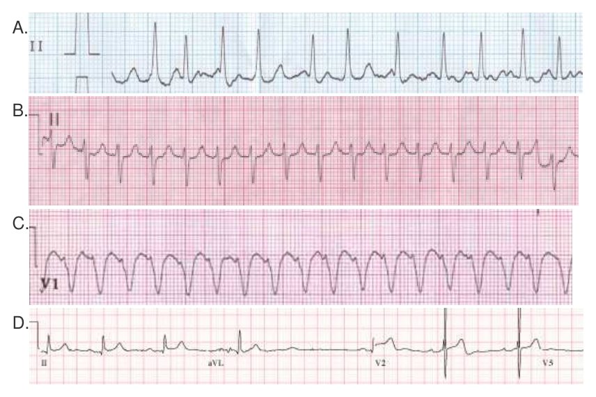
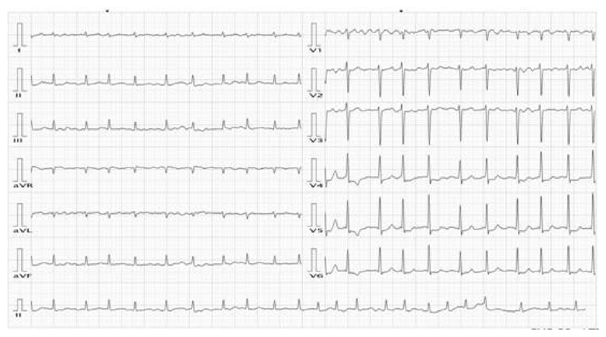
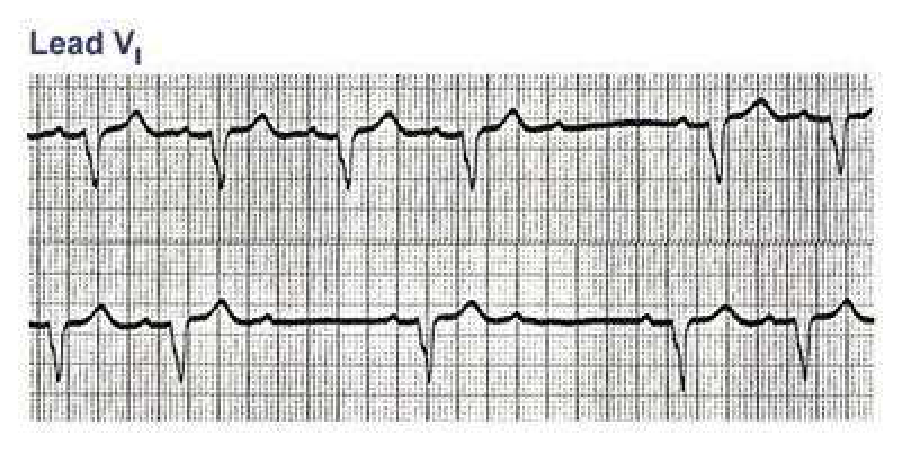
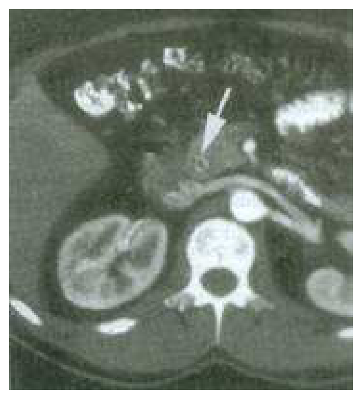
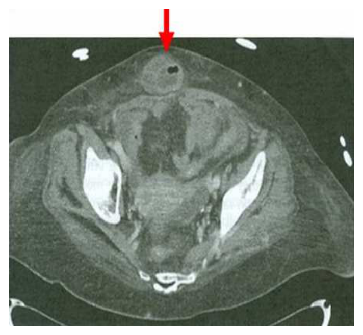

開卷有益 ／
醫師 ／ 醫學（三）（包括內科、家庭醫學科等科目及其相關臨床實例與醫學倫理） ／ 105 年第 2 次105 年第 2 次醫師醫學（三）（包括內科、家庭醫學科等科目及其相關臨床實例與醫學倫理）試題與答案
這一頁是民國 105 年第 2 次醫師醫學（三）（包括內科、家庭醫學科等科目及其相關臨床實例與醫學倫理）的整份歷屆試題，共 80 題，題目與標準答案出自考選部「國家考試試題及測驗式試題答案」開放資料，其中 80 題附有詳解。以下逐題列出題幹、選項與答案；要計時作答或記錄成績，請用線上練習。
考選部原始場次代碼：105100
線上作答這一科 →
全部 80 題
第 1 題
40歲女性，過去身體健康，因為近二日來說話不清楚、吞嚥困難和兩眼皮無法全張開，症狀逐漸加劇，來急診就醫。來院前五日她和媽媽與先生三人吃了路邊攤購買的素食豆干後，開始出現腹瀉、嘔吐和腹痛，後續發生前述症狀，同時，病患也逐漸出現近端肢體、顏面肌肉和呼吸無力。來院當日，媽媽和先生也開始出現類似的病症。理學檢查發現病患意識清楚，沒有發燒，心跳和血壓正常，但是呼吸較淺且費力；神經學檢查發現深部肌腱反射（deep tendon reflex）降低。最有可能的診斷為何？
（A） Guillain-Barré syndrome due to campylobacteriosis（B） tetanus（C） botulism（D） Lambert-Eaton syndrome答案：（C）
詳解與考點 正解：三人食用同一份素食豆干後，先有腸胃症狀，再出現對稱性顱神經麻痺（眼瞼下垂、吞嚥困難）、下降性無力與呼吸肌無力，且意識清楚、深部肌腱反射降低；這是食源性肉毒桿菌中毒的典型型態。（C）botulism 的毒素抑制神經肌肉接頭乙醯膽鹼釋放，可完整解釋共同暴露與神經症狀，故選 C。
A：Campylobacter 感染後的 Guillain-Barré syndrome 常在感染後一段時間才出現，且不會使同桌三人於同一時段共同出現顱神經麻痺與下降性無力。
B：tetanus 以肌肉僵直、牙關緊閉及痙攣為特徵，不是食物群聚後的鬆弛性麻痺。
D：Lambert-Eaton syndrome 可有近端無力與反射降低，但通常與腫瘤或自體免疫相關，不能解釋同餐者群聚發病及急性腸胃前驅症狀。
本題考點：肉毒桿菌中毒（botulism）；神經肌肉接頭（neuromuscular junction）——肉毒毒素阻斷乙醯膽鹼釋放，造成顱神經症狀、對稱性下降性鬆弛麻痺與呼吸衰竭風險。
第 2 題
胡小姐44歲，無過往心臟病病史，主訴突發性心悸。於急診室病人意識清楚，血壓為104/60 mmHg，心電圖顯示心律不整，經施打adenosine後恢復正常竇性心律，以下何心電圖最可能是胡小姐的心律不整？

本題選項為上圖中的 A／B／C／D，請對照圖片作答。
答案：（B）
詳解與考點 正解：圖（B）為規則、窄QRS的心搏過速，QRS之間可見不易辨識或緊貼QRS的心房活動，最符合陣發性上心室頻脈（paroxysmal supraventricular tachycardia, PSVT），常見機轉為房室結折返性心搏過速（atrioventricular nodal reentrant tachycardia, AVNRT）。adenosine 暫時阻斷房室結傳導，能中斷以房室結為折返迴路必要環節的心律不整，因而可恢復正常竇性心律，故選 B。
A：圖（A）雖也是窄QRS心搏過速，但QRS間可見連續、規律的心房波形，較像心房撲動（atrial flutter）合併固定房室傳導。adenosine 可暫時減少房室傳導、使撲動波更清楚，通常不能終止心房撲動本身，故不符題幹所述施打後轉復竇性心律。
C：圖（C）為規則且明顯寬大的QRS心搏過速，外觀符合單形性心室頻脈（monomorphic ventricular tachycardia）。心室頻脈起源於心室，並非依賴房室結的上心室折返迴路；adenosine 不會是其典型終止治療。
D：圖（D）可見非持續性的竇性心搏與不同導程下的基本心電圖波形，並非圖（B）那種持續而規則的窄QRS陣發性頻脈；無法以房室結依賴性折返機轉解釋題幹的突發心悸及 adenosine 終止效果。
本題考點：陣發性上心室頻脈（paroxysmal supraventricular tachycardia, PSVT）常呈規則窄QRS心搏過速；adenosine 造成暫時性房室結阻斷（atrioventricular nodal block），可終止 AVNRT 等房室結依賴性折返；心房撲動（atrial flutter）與心室頻脈（ventricular tachycardia）須由心房活動及QRS寬度鑑別。
第 3 題
一位64歲有心肌梗塞及鬱血性心臟衰竭的男性病人，平躺休息時沒有症狀，但他表示每天當他以平常的方式洗澡之後，就覺得很累、胸悶及心跳變快，要坐在椅子上休息數分鐘之後才能接著吹乾頭髮。若依紐約心臟學會的心衰竭功能分級（New YorkHeart Association Functional Classification），他目前屬於第幾級？
（A） 第一級（B） 第二級（C） 第三級（D） 第四級答案：（C）
詳解與考點 正解：平躺休息無症狀，但平常速度洗澡這類日常活動即引起疲倦、胸悶與心悸，需休息才緩解；這是明顯但非休息時的活動受限。紐約心臟學會分級中，第 III 級為小於一般日常活動即出現症狀、休息時舒適，因此（C）第三級最符合，故選 C。
A：第一級是一般身體活動不引起症狀，與洗澡即出現胸悶及疲倦不符。
B：第二級僅是一般活動有輕度限制；本題連洗澡後都必須停下休息，限制程度較重。
D：第四級是在休息時也有心衰竭症狀，任何活動都會加劇；病人平躺休息無症狀，故未達第四級。
本題考點：紐約心臟學會功能分級（New York Heart Association Functional Classification, NYHA class）——第 III 級為小於一般活動即有症狀、休息時舒適；第 IV 級則休息時亦有症狀。
第 4 題
張先生被家屬送來急診室，他們只知道張先生因心情不好，吞了一大把頭痛藥（acetaminophen）後就一直噁心、嘔吐、全身倦怠無力。抽血檢查結果如下：alanine aminotransferase（ALT）：894 U/L（normal：0～40）；aspartate aminotransferase（AST）：720 U/L（normal：5～45）；total bilirubin：2.2 mg/dL（normal：0.2～1.6）；direct bilirubin：1.8 mg/dL（normal：0～0.3）；alkaline phosphatase（ALK-P）：42 U/L（normal：10～100）；gamma-glutamyl transpeptidase（γ-GT）：50 U/L（normal：6～60）。關於此藥物引起之傷害，何者最不正確？
（A） 這是一種與劑量（dose dependent）有關的肝傷害（B） 血中藥物濃度與肝傷害嚴重度相關（C） 張先生如未發生肝衰竭，日後還是會演變成慢性肝病（D） 可能引起腎衰竭答案：（C）
詳解與考點 正解：大量 acetaminophen 暴露後，ALT 894 U/L、AST 720 U/L 顯著上升，而 ALK-P 與 γ-GT 未相應上升，符合急性肝細胞傷害。acetaminophen 毒性通常與劑量及血中濃度相關，急性嚴重中毒亦可併發腎損傷；但若未演變為肝衰竭，肝臟通常可恢復，並不必然成為慢性肝病。因此最不正確的是（C），故選 C。
A：acetaminophen 的肝毒性是典型與劑量相關的內在型藥物性肝損傷，敘述正確。
B：血中藥物濃度配合服藥時間可用來估計肝毒性風險；此選項看似過度簡化，但在急性 acetaminophen 中毒的風險評估原則上正確。
D：嚴重 acetaminophen 中毒除肝傷害外，也可能發生急性腎損傷或腎衰竭，敘述正確。
本題考點：acetaminophen 肝毒性（acetaminophen hepatotoxicity）；肝細胞型傷害（hepatocellular injury）；急性肝衰竭（acute liver failure）——劑量與濃度影響急性毒性，存活且未肝衰竭者通常不會因本次中毒必然演變為慢性肝病。
第 5 題
一位30歲男性，因為最近被發現有黃疸而就醫，抽血檢查結果：total bilirubin 6mg/dL（正常值：0.2～1.6）、direct bilirubin1.5mg/dL（正常值：0～0.3）、urine routine bilirubin (+)。以下描述何者錯誤？
（A） 病史詢問，應著重藥物史及溶血性疾病等（B） 身體診察可能發現脾臟腫大（C） ineffective erythropoiesis或Gilbert's syndrome也可能是本病人之病因（D） 尿液中，所測到之bilirubin是unconjugated bilirubin答案：（D）
詳解與考點 正解：total bilirubin 6 mg/dL、direct bilirubin 1.5 mg/dL，表示以間接膽紅素上升為主，但尿液 bilirubin 為陽性；能經尿液排出的膽紅素必須是水溶性的結合型膽紅素（conjugated bilirubin）。（D）稱尿中測到的是 unconjugated bilirubin 錯誤，故選 D。
A：黃疸鑑別應詢問藥物與溶血相關病史；藥物可造成肝細胞或膽汁鬱積傷害，溶血可造成間接膽紅素上升，敘述正確。
B：若有溶血或門脈高壓等相關病因，理學檢查可能發現脾臟腫大，並非錯誤敘述。
C：ineffective erythropoiesis 可增加膽紅素生成，Gilbert's syndrome 可造成非結合型高膽紅素血症，皆可列入以間接膽紅素升高為主的鑑別。
本題考點：膽紅素代謝（bilirubin metabolism）；結合型膽紅素（conjugated bilirubin）；非結合型膽紅素（unconjugated bilirubin）——非結合型膽紅素不溶於水、不能濾入尿液；尿膽紅素陽性代表有結合型膽紅素。
第 6 題
一位40歲病人原來腎功能正常，現其血肌酸酐（creatinine）上升至2.1 mg/dL，下列何種狀況最可判斷此病人傾向腎因性急性腎衰竭，而不是腎前性（prerenal）急性腎衰竭？
（A） 尿中出現透明圓柱體（hyaline casts）（B） 血中尿素氮（BUN）48 mg/dL（C） 尿鈉（Na）濃度為8 mmol/L（D） 尿鈉排泄分率（fractional excretion of sodium, FeNa）為2%答案：（D）
詳解與考點 正解：題目要區分腎因性與腎前性急性腎損傷。FeNa <1% 傾向腎前性，>2% 傾向腎因性；（D）FeNa 2% 位於傳統分界點，在四個選項中較傾向腎因性，故選 D，但仍須配合尿沉渣、容積狀態與用藥判讀。
A：透明圓柱體可見於濃縮尿或腎前性狀態，缺乏特異性。
B：BUN 48 mg/dL 單獨無法區分病因，須與 creatinine 比值及臨床資料整合。
C：尿鈉 8 mmol/L 顯示腎臟保鈉，較符合腎前性狀態。
本題考點：急性腎損傷（acute kidney injury）；尿鈉排泄分率（fractional excretion of sodium, FeNa）；尿沉渣（urine sediment）。
第 7 題
下列有關糖尿病腎病變之敘述，何者錯誤？
（A） 蛋白尿或微蛋白尿不會出現於新診斷第二型糖尿病病人（B） 病理上的變化如腎絲球基底膜變厚及腎小球內基質（mesangium）擴張是常見的（C） 使用腎素－血管張力素系統（renin-angiotensin system）阻斷劑（D） 國內目前每年進入透析的新病人其原發病因以糖尿病腎病變占第一位答案：（A）
詳解與考點 正解：問糖尿病腎病變的錯誤敘述。第二型糖尿病在確診前可能已長期未被察覺，因此初次診斷時就可能已有微量白蛋白尿或明顯蛋白尿；（A）說這些絕不會出現，使用絕對語氣而錯誤，故選 A。
B：腎絲球基底膜增厚及 mesangium 擴張是糖尿病腎病變的典型病理改變，敘述正確。
C：腎素－血管張力素系統阻斷劑可降低腎絲球內壓並減少蛋白尿，是合併高血壓或白蛋白尿時的重要腎臟保護治療方向。
D：糖尿病腎病變是進入透析病人的重要原發病因；此選項看似在考流行病學順位，但與題目所述國內臨床負擔相符。
本題考點：糖尿病腎病變（diabetic kidney disease）；白蛋白尿（albuminuria）；腎素－血管張力素系統（renin-angiotensin system）——第二型糖尿病確診時即可有腎臟併發症，故應及早檢測尿白蛋白與腎功能。
第 8 題
一位34歲類風濕關節炎患者兩手PIP及MCP joints有腫脹，腕關節有腫脹及活動受限，兩側肘關節有腫脹及變形。ESR：83mm/1h，CRP：5.36 mg/dL（normal < 0.8 mg/dL），RF：635 IU/mL（normal<10 IU/mL），經以methotrexate 15mg/week+salfasalazine 500 mg QID及prednisolone 10 mg QD治療約半年無顯著效果，下一步應該選擇何種治療藥物最為恰當？
（A） anti-TNF-α（B） IL-1 receptor antagonist（C） prednisolone 1000 mg/day pulse therapy for 3 days（D） anti-pyrimidine agent答案：（A）
詳解與考點 正解：類風濕關節炎有多關節腫脹、ESR/CRP 高、RF 高，且經 methotrexate、sulfasalazine 與低劑量 prednisolone 約半年仍未控制，表示傳統合成型疾病修飾抗風濕藥（csDMARD）治療反應不足。（A）anti-TNF-α 為可加入的生物製劑疾病修飾抗風濕藥，符合升階治療，故選 A。
B：IL-1 receptor antagonist 可用於部分發炎疾病，但在此種對 methotrexate 為基礎治療反應不足的類風濕關節炎，並非題目所問最適當的優先選擇。
C：高劑量 prednisolone pulse therapy 看似能快速壓低發炎，卻有顯著全身性不良反應，較適用特定嚴重急症，而非長期控制未達標的常規下一步。
D：anti-pyrimidine agent 指 leflunomide 類藥物，屬另一傳統合成型 DMARD；病人已在雙 csDMARD 基礎治療下無效，題意更支持升階至生物製劑。
本題考點：類風濕關節炎（rheumatoid arthritis）；疾病修飾抗風濕藥（disease-modifying antirheumatic drugs, DMARDs）；腫瘤壞死因子抑制劑（TNF inhibitors）——活動性疾病在 csDMARD 治療不足時，可考慮升階至生物製劑；實際選藥仍須評估感染與共病風險。
第 9 題
一位54歲男性，過去無全身性疾病病史，亦無特殊不適，但其家人注意到他的臉總是紅紅的，身體檢查顯示臉部泛紅，血壓130/86 mmHg，脾臟在左肋緣下1指幅可觸摸到。抽血檢查發現血紅素19.5 gm/dL，血比容60%，白血球12500/µL，neutrophil73%，monocyte 6%，lymphocyte 20%，eosinophil 1%，血小板546000/µL，血清中erythropoietin 3 mIU/µL（正常3.7～31.5），血球細胞有JAK2基因突變。對此病人最適當的治療為何？
（A） hydroxyurea（B） anagrelide（C） radioactive phosphorus 32P（D） phlebotomy答案：（D）
詳解與考點 正解：臉紅、Hb 19.5 gm/dL、Hct 60%、血小板與白血球升高、erythropoietin 偏低及 JAK2 突變，符合真性紅血球增多症（polycythemia vera）。此病人 54 歲且題幹未示血栓病史，首要目標是降低血比容以減少血栓風險；（D）phlebotomy 可直接移除紅血球量，最適當，故選 D。
A：hydroxyurea 為細胞減少治療，可用於較高血栓風險或單靠放血無法控制者；本題優先處置仍是放血。
B：anagrelide 主要降低血小板，不能作為控制真性紅血球增多症紅血球量的首選。
C：radioactive phosphorus 32P 為骨髓抑制性治療，因長期骨髓毒性等考量，不是此病人的優先處置。
本題考點：真性紅血球增多症（polycythemia vera）；JAK2 突變（JAK2 mutation）；放血治療（phlebotomy）——低 erythropoietin 合併 JAK2 突變支持原發性骨髓增生性腫瘤，初步以降低紅血球量來減少血栓風險。
第 10 題
一個35歲男性患者診斷為malignant lymphoma，diffuse large B-cell type，stage IIA，下列有關敘述何者為正確？
（A） 一般而言，積極化學治療約可達到70%的緩解率（remission rate）（B） 除非進行造血幹細胞移植，否則無治癒可能（C） 屬於aggressive malignancy，腫瘤生長速度快，化學藥物治療效果不佳（D） 應該儘可能只給予radiation therapy就好，避免給予systemic chemotherapy，以免以後發生secondary leukemia答案：（A）
詳解與考點 正解：diffuse large B-cell lymphoma（DLBCL）雖屬侵襲性淋巴瘤，但對適當的全身性免疫化學治療具有治癒可能；早期分期也不表示只能接受放射治療。（A）以一般約 70% 的緩解率描述其對積極治療的可治療性，是本題正確敘述，故選 A。
B：DLBCL 不必以造血幹細胞移植作為唯一治癒途徑；許多病人可由第一線免疫化學治療達到長期緩解或治癒。
C：侵襲性代表生長快，卻也常對化學治療敏感；把生長快直接推成化療效果不佳，是常見但錯誤的反向聯想。
D：早期 DLBCL 的治療通常須納入全身性治療，不能為了避免日後風險而只給局部 radiation therapy，否則無法充分處理潛在全身性疾病。
本題考點：瀰漫性大 B 細胞淋巴瘤（diffuse large B-cell lymphoma, DLBCL）；侵襲性淋巴瘤（aggressive lymphoma）；免疫化學治療（immunochemotherapy）——DLBCL 生長快但具治癒可能。緩解比例會隨分期、預後與治療策略而變動，題目以約 70% 作概念性表述
第 11 題
ㄧ位70歲男性病人，主訴為進行性呼吸困難、咳嗽、但痰不多，胸部X光片顯示兩側下肺葉浸潤，HRCT（high-resolutionCT）顯示主要變化為basilar and subpleural reticular opacities，traction bronchiectasis and honeycombing表現，最可能的診斷為：
（A） usual interstitial pneumonia（UIP）（B） nonspecific interstitial pneumonia（NSIP）（C） cryptogenic organizing pneumonia（D） aspiration pneumonia答案：（A）
詳解與考點 正解：高齡男性漸進性呼吸困難與乾咳，HRCT 有雙側基底、胸膜下 reticular opacities、traction bronchiectasis 與 honeycombing；這是 usual interstitial pneumonia（UIP）的典型影像型態。（A）UIP 最能整合基底胸膜下分布、牽拉性支氣管擴張和蜂窩肺，故選 A。
B：NSIP 常較均勻的磨玻璃陰影與細網狀改變，蜂窩肺通常較少且較不突出，與題幹典型 UIP 圖像不合。
C：cryptogenic organizing pneumonia 常見斑片狀實變或周邊肺泡性浸潤，並非以胸膜下蜂窩肺及牽拉性支氣管擴張為主。
D：aspiration pneumonia 多與吸入風險及依重力區的急性或反覆浸潤相關，不能解釋慢性基底胸膜下纖維化與蜂窩肺。
本題考點：通常型間質性肺炎（usual interstitial pneumonia, UIP）；高解析度電腦斷層（high-resolution computed tomography, HRCT）；蜂窩肺（honeycombing）——UIP 的典型 HRCT 為基底、胸膜下優勢的網狀陰影、牽拉性支氣管擴張與蜂窩肺。
第 12 題
一位70歲男性，意識清楚，因咳嗽、黃痰和發燒來醫院就診，胸腔科門診的胸部X光片顯示右上葉肺炎，患者的vital signs：BP 150/80 mmHg，heart rate 110/min（regular），respiratory rate 33/min，BT：38℃；依據指引，此病患的最適宜治療方式是：
（A） 門診治療（B） 一般病房住院治療（C） 加護病房住院治療（D） 立即施打肺炎疫苗本題送分，無標準答案
詳解與考點 本題官方公告送分。
第 13 題
32歲女性長期無月經，最近因打籃球時發生肋骨骨折，骨密度檢查T-score 為-2.8。病人曾於20歲時，因原發性無月經住院檢查，發現嗅覺不佳且子宮很小，因此曾服用口服避孕藥2年，之後因頭痛自行停藥。抽血檢查 LH＜0.8 IU/L, estradiol＜20pg/mL。下列有關骨鬆症之治療何者最恰當？
（A） bisphosphonate（B） estrogen（C） calcium + Vit D（D） human recombinant PTH答案：（B）
詳解與考點 正解：原發性無月經、嗅覺不佳、低 LH 與低 estradiol 顯示低促性腺激素性性腺功能低下，合併肋骨骨折與明顯低骨密度。年輕女性應優先補充 estrogen，以矯正雌激素缺乏並保護骨質，故選 B。
A：bisphosphonate 抑制骨吸收，但不能取代病因導向的荷爾蒙補充，且須考量年輕女性的生育規劃。
C：calcium + Vit D 是骨骼健康的基礎支持，但不能單獨矯正嚴重低雌激素狀態。
D：human recombinant PTH 通常保留給特定高骨折風險情境；本題先處理性腺功能低下。
本題考點：低促性腺激素性性腺功能低下（hypogonadotropic hypogonadism）；雌激素缺乏（estrogen deficiency）；骨質疏鬆症（osteoporosis）。
第 14 題
一位30歲女性懷孕三個月，體檢發現其甲狀腺輕微腫大觸感堅實。驗血發現free T4 0.6 ng/dL（normal range 0.8～1.8ng/dL），T3 120 ng/dL（normal range 80～180 ng/dL），TSH 20µIU/mL（normal range 0.1～2.0 µIU/mL），你認為她的甲狀腺功能如何？
（A） 正常甲狀腺功能（euthyroidism）（B） 甲狀腺功能亢進（hyperthyroidism）（C） 次發性甲狀腺功能低下（secondary hypothyroidism）（D） 原發性甲狀腺功能低下（primary hypothyroidism）答案：（D）
詳解與考點 正解：free T4 0.6 ng/dL低於正常，而TSH 20 µIU/mL顯著升高。甲狀腺本身無法製造足夠甲狀腺素時，腦下垂體因負回饋減少而提高TSH分泌，正是原發性甲狀腺功能低下，故選 D。
A：正常甲狀腺功能應有正常free T4與TSH；本題兩項均明顯異常，不能視為妊娠造成的正常變化。
B：甲狀腺功能亢進通常是free T4升高且TSH受抑制，與本題相反。
C：次發性甲狀腺功能低下是腦下垂體或下視丘問題，TSH通常偏低或不適當地正常；本題TSH很高，反而支持甲狀腺原發病變。
本題考點：甲狀腺軸負回饋（hypothalamic-pituitary-thyroid axis）——原發性甲狀腺功能低下（primary hypothyroidism）表現為free T4下降、TSH上升；次發性甲狀腺功能低下（secondary hypothyroidism）則不會有適當的TSH上升。
第 15 題
70歲女性有糖尿病和高血壓，並控制良好，意識清楚且生活可自理。年度健康檢查，自解尿液作常規檢驗，發現有膿尿及菌尿症；經問診及理學檢查，確認病人無發燒、頻尿、解尿疼痛、腰部疼痛等，下列處置何者最適當？
（A） 進行腹部電腦斷層檢查（B） 住院進行靜脈抗生素治療（C） 給予口服抗生素治療（D） 觀察及衛教，不需抗生素治療答案：（D）
詳解與考點 正解：膿尿與菌尿，但病人沒有發燒、頻尿、排尿疼痛或腰痛，屬無症狀菌尿（asymptomatic bacteriuria）。非孕婦且未規劃侵入性泌尿道處置時，糖尿病或高齡本身都不是抗生素治療適應症；應觀察及衛教、不給抗生素，故選 D。
A：腹部電腦斷層用於懷疑阻塞、膿瘍或複雜感染等情況；此人沒有症狀或全身感染徵象，沒有常規影像檢查的理由。
B：靜脈抗生素適用於嚴重或複雜尿路感染，無症狀菌尿不僅不需住院，也不應因培養或尿液檢驗異常而治療。
C：口服抗生素看似較溫和，但仍會造成不必要的藥物不良反應與抗藥性，不能用於此無症狀情境。
本題考點：無症狀菌尿（asymptomatic bacteriuria）——有菌尿不等於尿路感染（urinary tract infection）；除少數特殊族群外，不應以抗生素治療。
第 16 題
65歲男性病人因嚴重肺炎合併呼吸衰竭，入住加護病房，經投予廣效抗生素三天後退燒；但在第五天出現腹痛，腹脹及水便（每日至少五次），下列敘述何者最為適當？
（A） 糞便中Clostridium difficile toxin毒素檢測陰性，可排除Clostridium difficile相關腹瀉之診斷（B） 糞便培養長出Clostridium difficile，可確診Clostridium difficile相關腹瀉之診斷（C） 如腹瀉症狀明顯，可先使用loperamide來緩和症狀（D） 可用口服metronidazole治療答案：（D）
詳解與考點 正解：廣效抗生素後腹痛、腹脹與水樣腹瀉應懷疑 Clostridioides difficile infection（CDI）。就本題選項而言，口服 metronidazole 為可用治療，故選 D；惟現今治療以 fidaxomicin 或口服 vancomycin 為主，metronidazole 僅在初次非重症且首選藥無法取得或不適用時作替代。
A：單一次毒素檢測陰性不能單獨完全排除 CDI，須整合症狀、採檢品質與檢測方法。
B：糞便培養長出 C. difficile 可能只是定殖（colonization），不能只憑培養陽性確診。
C：loperamide 抑制腸蠕動，可能增加毒素滯留及嚴重腸炎或腸麻痺風險，不宜作為優先處置。
本題考點：Clostridioides difficile infection（CDI）；定殖（colonization）；fidaxomicin、口服 vancomycin 與 metronidazole 的治療定位。
第 17 題
下列有關懷孕對血行動力學及血壓的影響敘述，何者錯誤？
（A） 懷孕期間，心輸出量增加約40%（B） 懷孕期間，週邊血管阻力增加（C） 懷孕期間，心跳加快（D） 懷孕期間，血壓測量（連續二次，相隔超過 6 小時）超過140/90 mmHg為不正常答案：（B）
詳解與考點 正解：問懷孕血行動力學的錯誤敘述。正常懷孕因血管擴張與胎盤循環形成，週邊血管阻力會下降而不是增加，故錯誤的是 B。
A：心輸出量在懷孕期間增加約40%，來自心跳加快與搏出量增加，為正常適應。
C：懷孕時心跳加快，有助於提升心輸出量以供應母體與胎兒需求，敘述正確。
D：妊娠期間反覆量得血壓超過140/90 mmHg屬不正常，應評估妊娠高血壓相關疾病，故不是錯誤選項。
本題考點：妊娠血行動力學（maternal hemodynamics）——心輸出量（cardiac output）與心跳增加，系統性血管阻力（systemic vascular resistance）下降；妊娠高血壓（hypertensive disorders of pregnancy）須以反覆血壓異常辨識。
第 18 題
下列有關低血鈉症（hyponatremia）的描述，何者正確？
（A） 如果血漿滲透壓（osmolality）偏低，應考慮是否有高血糖（B） 心臟衰竭可能造成細胞外體液（extracellular fluid）增加及低血鈉（C） 低血鈉及細胞外體液減少的病人，若尿液鈉離子濃度低於10 mmol/L，代表有Na+ wasting nephropathy（D） 抗利尿激素不適當分泌（SIADH）的病人通常血漿滲透壓正常，但細胞外體液減少答案：（B）
詳解與考點 正解：低血鈉需同時判斷血漿滲透壓與細胞外液容積。心臟衰竭雖使有效動脈循環血量下降而促進抗利尿激素分泌，但總細胞外液因水鈉滯留而增加，因而可造成高容積性低血鈉，故選 B。
A：高血糖造成的是高滲透壓性低血鈉，血漿滲透壓應偏高或不低；若血漿滲透壓偏低，不能以高血糖作主要解釋。
C：低血鈉合併細胞外液減少時，尿鈉低於10 mmol/L表示腎臟正努力保鈉，較支持腎外鈉流失；腎性鈉流失反而常使尿鈉偏高。
D：SIADH通常為低滲透壓性低血鈉且臨床接近等容積，不是血漿滲透壓正常並有細胞外液減少。
本題考點：低血鈉分類（hyponatremia classification）——先辨識滲透壓，再依細胞外液容積分為低容積、等容積與高容積；心臟衰竭（heart failure）是高容積性低血鈉的典型原因。
第 19 題
下列何者，不是急性心衰竭合併肺水腫的主要用藥？
（A） 靜脈注射dopamine or dobutamine（B） 靜脈注射nitroglycerin（C） 靜脈注射利尿劑（D） 優先使用乙型交感神經阻斷劑（β-blocker）答案：（D）
詳解與考點 正解：急性心衰竭合併肺水腫的主要用藥。急性鬱血時需依血壓與灌流處理肺充血、降低前後負荷或支持低灌流；乙型交感神經阻斷劑不應在急性失代償、肺水腫時優先新開始或加量，故選 D。
A：dopamine或dobutamine可在低心輸出量、低灌流或休克的特定急性心衰竭病人提供正性肌力支持，並非所有人都用，但屬急性處置工具。
B：nitroglycerin 可於血壓允許時降低前負荷並緩解肺鬱血，是急性肺水腫常用的血管擴張策略。
C：靜脈利尿劑可減少體液鬱積與肺充血，是有容量負荷時的主要藥物之一。
本題考點：急性失代償性心衰竭（acute decompensated heart failure）——肺水腫處置重點是氧合、減少鬱血與依灌流調整血管擴張或正性肌力藥；乙型阻斷劑（beta-blocker）在急性不穩定期不作優先升階治療。
第 20 題
下列有關肥厚性心肌病變（hypertrophic cardiomyopathy）的敍述，何者錯誤？
（A） 有一半的病人可能有家族史及基因變異（B） 聽診時常出現第四心音（S4）（C） 最常見的死因為猝死（sudden cardiac death）（D） 若病人臨床上出現氣促（dyspnea）及胸痛（chest pain），則以利尿劑（diuretics）及硝酸鹽（nitrate）為首選藥物答案：（D）
詳解與考點 正解：肥厚性心肌病變的症狀治療。若有動態性左心室流出道阻塞，減少前負荷的利尿劑與硝酸鹽可能使阻塞加劇，並非氣促與胸痛的首選；通常以減慢心跳、改善舒張充盈的藥物為主要方向，故錯誤的是 D。
A：約半數病人可見家族史或致病基因變異，肥厚性心肌病變常具常染色體顯性遺傳背景，敘述正確。
B：心室順應性下降使心房收縮更重要，故可聽到第四心音（S4），敘述正確。
C：猝死是肥厚性心肌病變的重要死因，尤其在具高風險特徵者，敘述正確。
本題考點：肥厚性心肌病變（hypertrophic cardiomyopathy）——舒張功能障礙與動態性左心室流出道阻塞（left ventricular outflow tract obstruction）是核心；避免不當降低前負荷的治療。
第 21 題
67歲男性本身有糖尿病，目前以口服降血糖藥物控制，前一天晚上11點左右喝了2瓶啤酒後，忽然發生心悸，一直到今日上午7時持續不舒服。因休息無法改善，故到急診求診。病患表示以前無發生過此症狀。生命徵象為：意識清楚，體溫36.5℃，心跳每分鐘140次，血壓150/80毫米汞柱，呼吸每分鐘24次。心電圖如下。下列處置何者最恰當？

（A） 給予coumadin口服（B） 立即胸前電擊100J（C） 給予amiodarone靜脈注射治療（D） 給予heparin靜脈注射治療答案：（C）
詳解與考點 正解：心電圖符合心房撲動（atrial flutter）合併快速房室傳導。病人意識清楚、血壓穩定且症狀未滿 48 小時；在題目選項中，以（C）amiodarone 靜脈注射作藥物節律控制最符合本題所問的首選策略，故選 C。
A：warfarin（coumadin）用於降低血栓栓塞風險，起效不即時，不能作為此刻快速心房撲動的首要症狀控制。
B：穩定病人不必因不穩定徵象而立即電擊；同步電復律仍可作為節律控制選項，100 J 對心房撲動亦可能有效。故本題選 C 的理由是題幹情境與首選策略，不是穩定者一律必先用藥。
D：heparin 可快速抗凝，但不直接終止快速心房撲動；抗凝須依持續時間、栓塞風險與復律計畫整體評估。
本題考點：心房撲動（atrial flutter）；同步電復律（synchronized cardioversion）；抗凝血治療（anticoagulation）與急性節律處置。
第 22 題
對於左心室收縮性功能異常的心臟衰竭病人，下列何種治療無法延長病人壽命？
（A） 血管張力素轉化酶抑制劑（ACE inhibitors）（B） 乙型交感神經接受器阻斷劑（beta-adrenergic receptor blockers）（C） 毛地黃（digitalis）（D） 血管擴張劑組合（combination of vasodilators）答案：（C）
詳解與考點 正解：左心室收縮功能異常心衰竭中「無法延長壽命」的治療。digitalis 可改善症狀、降低部分住院風險，但未證實能降低死亡率，因此無法延長病人壽命，故選 C。
A：ACE inhibitors 可抑制腎素—血管張力素系統、減少重塑與不良事件，為可改善存活的基礎治療。
B：具實證的beta-adrenergic receptor blockers 可減少交感神經長期傷害並改善存活，不能因其負性肌力作用而誤認沒有預後效益。
D：特定血管擴張劑組合可同時降低前、後負荷，對適當病人具有預後效益，故非本題答案。
本題考點：射出分率降低心衰竭（heart failure with reduced ejection fraction, HFrEF）——治療須區分症狀改善與死亡率改善；毛地黃（digitalis）主要提供症狀與住院風險效益，非存活效益。
第 23 題
下列何者為最常見規則性的陣發性上心室頻脈（paroxysmal regular supraventricular tachycardia）？
（A） 心房撲動（atrial flutter）（B） atrioventricular nodal reentry tachycardia（AVNRT）（C） 心房顫動（atrial fibrillation）（D） 多型性心房頻脈（multifocal atrial tachycardia）答案：（B）
詳解與考點 正解：「規則性」且「陣發性」的上心室頻脈。atrioventricular nodal reentry tachycardia（AVNRT）利用房室結內雙重傳導路徑形成再進入迴路，是最常見的規則性陣發性上心室頻脈，故選 B。
A：心房撲動可造成規則心律，但其病理機轉是心房巨型再進入迴路，並非最常見的典型陣發性規則SVT。
C：心房顫動的心室節律典型為不規則不整，與題目指定的規則性不符。
D：多型性心房頻脈有多個心房異位節律，心律通常不規則，常見於嚴重肺部疾病，與規則性SVT不符。
本題考點：陣發性上心室頻脈（paroxysmal supraventricular tachycardia）——AVNRT是常見再進入性規則心搏過速；心房顫動（atrial fibrillation）與多型性心房頻脈（multifocal atrial tachycardia）則以不規則心律鑑別。
第 24 題
一位85歲男性，有高血壓病史，因在家中昏倒被家人送到急診室，在急診室所做的心電圖如附圖，下列敘述何者正確？

（A） 病人心電圖為第三度的房室傳導阻斷（3rd degree AV block）（B） 病因應考慮高血壓用藥引起（C） 如果是急性心肌梗塞所導致，大部分發生於前壁急性心肌梗塞病人（anterior wall myocardial infarction）（D） 應立即置放永久性心臟節律器（permanent pacemaker）答案：（B）
詳解與考點 正解：附圖可見規則出現的 P 波中，部分未能傳導為 QRS 波，造成明顯緩慢的心室搏動；已傳導的搏動仍可辨認 P 波與 QRS 波的關係，較符合高度第二度房室傳導阻斷（high-grade second-degree atrioventricular block），而非完全房室分離。高齡病人發生此類緩脈時，應先檢視可逆病因；具抑制房室結傳導作用的高血壓用藥，例如 β 阻斷劑或非二氫吡啶類鈣離子通道阻斷劑，均可能使房室傳導阻斷惡化，故選 B。
A：第三度房室傳導阻斷（complete AV block）的特徵是心房與心室各自規律活動、P 波與 QRS 波完全沒有固定關係；本圖是多個 P 波未傳導而出現漏搏，仍非典型的房室完全分離，故不宜判為第三度阻斷。
C：急性心肌梗塞合併房室傳導阻斷時，較常與下壁心肌梗塞相關，因右冠狀動脈常供應房室結；前壁心肌梗塞雖可造成較嚴重的傳導系統損傷，卻不是「大部分」發生的部位，故此敘述錯誤。
D：病人雖有昏倒與顯著緩脈，須先監測血流動力學、處理可逆原因並視情況採取急性暫時性節律支持；永久性心臟節律器須在停用可能致病藥物後，確認房室傳導阻斷持續且不可逆等情況再評估，不能一律立即置放。
本題考點：第二度與第三度房室傳導阻斷（second-degree and complete atrioventricular block）的心電圖鑑別；藥物造成的房室結傳導抑制（drug-induced AV nodal blockade）；急性心肌梗塞的傳導阻斷與下壁心肌梗塞（inferior wall myocardial infarction）的關聯。
第 25 題
60歲女性因急性腹痛、發燒至急診處，血液檢查結果為bilirubin（total/direct）：3.5/2.0 mg/dL，AST：100 U/L，ALT：75U/L，腹部電腦斷層結果如圖，最可能的診斷為：

（A） 急性肝炎（B） 急性盲腸炎（C） 急性膽管炎（D） 急性腸胃炎答案：（C）
詳解與考點 正解：病人有急性腹痛、發燒，以及 total/direct bilirubin 3.5/2.0 mg/dL，直接型膽紅素上升較符合膽汁鬱積或膽道阻塞。腹部電腦斷層中，箭頭指向肝外膽道區的異常，與膽道阻塞的臨床脈絡相符；膽道阻塞合併細菌感染會造成急性膽管炎（acute cholangitis），故選 C。此題呈現 Charcot triad 的其中兩項，即腹痛與發燒，另有膽汁鬱積的實驗室證據。
A：急性肝炎可使 AST、ALT 上升並可能伴隨黃疸，但通常以肝細胞受損為主，轉胺酶常明顯升高；本題 AST、ALT 僅輕至中度上升，直接膽紅素上升及圖中肝外膽道區異常更支持阻塞性膽道疾病，而非急性肝炎。
B：急性盲腸炎的典型表現是右下腹痛、食慾不振與局部腹膜刺激徵象，不能合理解釋直接型高膽紅素血症與箭頭所示肝外膽道區的異常。
D：急性腸胃炎可有腹痛、發燒、噁心、嘔吐或腹瀉，但不會典型造成直接膽紅素上升，也無法解釋圖中提示的膽道病灶，因此不是最可能診斷。
本題考點：急性膽管炎（acute cholangitis）是膽道阻塞後的感染，常以腹痛、發燒與黃疸構成 Charcot triad；膽汁鬱積（cholestasis）常表現為直接型高膽紅素血症；電腦斷層（computed tomography, CT）出現肝外膽道相關異常時，須結合臨床與肝膽生化資料判斷膽道阻塞。
第 26 題
幽門螺旋桿菌感染不會增加下列何項疾病的風險？
（A） reflux esophagitis（B） non-cardiac gastric cancer（C） gastric mucosa-associated lymphoid tissue（MALT）lymphoma（D） gastric ulcer答案：（A）
詳解與考點 正解：幽門螺旋桿菌感染「不會增加」何者風險。Helicobacter pylori與胃炎、胃潰瘍、非賁門胃癌及胃MALT lymphoma相關；相較之下，它不會增加reflux esophagitis風險，故選 A。
B：non-cardiac gastric cancer與長期H. pylori感染、慢性胃炎及萎縮性變化有明確關聯，故不是答案。
C：gastric MALT lymphoma與H. pylori密切相關，根除細菌甚至可使部分早期病灶緩解，故不是答案。
D：H. pylori是gastric ulcer的重要病因，感染會提高胃潰瘍風險，故不是答案。
本題考點：幽門螺旋桿菌（Helicobacter pylori）——與消化性潰瘍病（peptic ulcer disease）、非賁門胃癌（non-cardiac gastric cancer）及胃MALT淋巴瘤（gastric MALT lymphoma）相關；應與胃食道逆流疾病（gastroesophageal reflux disease）區分。
第 27 題
68歲女性因肚臍周圍疼痛合併噁心嘔吐至急診，理學檢查發現體溫37.5℃，且肚臍周圍有壓疼，血液檢查WBC：14500/µL，分類segment：85%，腹部電腦斷層結果如圖，最可能的診斷為何？

（A） acute appendicitis（B） ventral hernia（C） acute diverticulitis（D） adynamic ileus答案：（B）
詳解與考點 正解：附圖的軸向腹部電腦斷層可見肚臍處前腹壁有局部缺損，腸管自腹腔向前突出至腹壁下，箭頭正標示此肚臍部位；結合肚臍周圍壓痛、噁心嘔吐與嗜中性白血球上升，最符合腹側疝氣（ventral hernia）。疝囊內腸管可能造成腸阻塞，若嵌頓（incarceration）或絞窄（strangulation）則可引起發炎反應，故選 B。
A：急性闌尾炎（acute appendicitis）常以右下腹痛與闌尾腫大、周圍脂肪發炎為主要影像線索；本圖最明顯的異常在（B）肚臍前腹壁的腸管突出，不能由闌尾炎解釋。
C：急性憩室炎（acute diverticulitis）通常在結腸憩室周圍出現腸壁增厚與局部脂肪浸潤，疼痛多位於左下腹；本圖沒有呈現此類結腸周圍發炎表現，反而可見（B）腹壁缺損處的腸管突出。
D：無動力性腸阻塞（adynamic ileus）是腸蠕動普遍減弱造成的功能性腸管擴張，通常不會有明確的腹壁缺損或腸管穿出腹壁；本圖的局部肚臍疝出是機械性病灶，較不支持單純腸麻痺。
本題考點：腹側疝氣（ventral hernia）是腹腔內容物經前腹壁薄弱或缺損處突出；嵌頓（incarceration）可導致機械性腸阻塞，絞窄（strangulation）則可能進一步造成腸缺血；腹部電腦斷層（computed tomography, CT）可辨識腹壁缺損、疝囊內容物及腸阻塞相關徵象。
第 28 題
小型肝癌（small hepatocellular carcinoma）最常見的症狀為何？
（A） 通常沒有症狀（B） 腹水（C） 黃疸（D） 吐血答案：（A）
詳解與考點 正解：「小型」肝細胞癌。小型肝癌常在尚未造成膽道阻塞、門脈高壓或肝功能明顯失代償時，由高危險群監測發現，因此最常見是沒有症狀，故選 A。
B：腹水多反映肝硬化失代償、門脈高壓或晚期腫瘤相關狀態，不是小型肝癌最常見的初始表現。
C：黃疸可能見於肝功能惡化或膽道受侵犯，但小型病灶通常尚未造成此種臨床表現。
D：吐血通常來自食道或胃靜脈曲張出血，是門脈高壓併發症，不是小型肝癌本身最常見的症狀。
本題考點：肝細胞癌（hepatocellular carcinoma）——早期或小型肝癌（small hepatocellular carcinoma）常無症狀；肝癌監測（surveillance）目的即在症狀出現前發現可治療病灶。
第 29 題
一位腹水病人之血中白蛋白（albumin）是3.0 g/dL，腹水中的白蛋白是1.2 g/dL，下列何項診斷較不可能？
（A） 肝硬化（liver cirrhosis）（B） 鬱血性心衰竭（congestive heart failure）（C） 腎病症候群（nephrotic syndrome）（D） Budd-Chiari症候群（Budd-Chiari syndrome）答案：（C）
詳解與考點 正解：血清白蛋白3.0 g/dL減腹水白蛋白1.2 g/dL，血清—腹水白蛋白梯度（serum-ascites albumin gradient, SAAG）＝3.0-1.2=1.8 g/dL。SAAG大於或等於1.1 g/dL支持門脈高壓相關腹水；肝硬化、鬱血性心衰竭與Budd-Chiari症候群均可符合，腎病症候群較不可能，故選 C。
A：肝硬化造成門脈高壓，是高SAAG腹水最典型的原因，與1.8 g/dL相符。
B：鬱血性心衰竭使肝靜脈壓與門脈系統壓力升高，也可形成高SAAG腹水，故不是答案。
D：Budd-Chiari症候群為肝靜脈流出阻塞，可造成門脈高壓相關腹水，亦可有高SAAG。
本題考點：血清—腹水白蛋白梯度（serum-ascites albumin gradient, SAAG）——SAAG ≥1.1 g/dL支持門脈高壓（portal hypertension）；腎病症候群（nephrotic syndrome）通常不屬此類機轉。
第 30 題
下列有關乳糖不耐症（lactose intolerance）的敘述，何者錯誤？
（A） 臨床可出現腹脹、腹瀉、腹痛、脹氣、放屁等症狀（B） 亞洲人90%左右有此困擾，而白種人則不到25%（C） 腹瀉屬於分泌性（secretory）腹瀉，停用乳糖製品可改善（D） 給病人補充乳糖酵素可以改善。含活的乳酸菌之優酪乳（yogurt）因可產生乳糖酵素，病人可以接受答案：（C）
詳解與考點 正解：乳糖未被小腸乳糖酶分解時，留在腸腔內增加滲透負荷並被細菌發酵；因此腹瀉屬滲透性（osmotic）而非分泌性，錯誤的是 C。
A：乳糖進入結腸後受細菌發酵會產生氣體，並因滲透作用帶水入腸腔，故腹脹、腹痛、腹瀉、脹氣與放屁皆可出現。
B：乳糖酶缺乏盛行率受族群遺傳背景影響，亞洲族群普遍較高、部分白種人族群較低，敘述方向正確。
D：補充乳糖酶可改善症狀；含活菌的優酪乳因乳糖酶活性及較佳耐受性，常較一般乳製品容易接受。
本題考點：乳糖不耐症（lactose intolerance）——乳糖酶缺乏（lactase deficiency）導致滲透性腹瀉（osmotic diarrhea）；停用或減量乳糖、使用乳糖酶與選擇優酪乳是常見處理方式。
第 31 題
下列原發性膽原性肝硬化（primary biliary cirrhosis）臨床的敘述，何者錯誤？
（A） 皮膚搔癢（pruritus）（B） 好發於男性（C） 好發於女性（D） 絕大部分血清抗粒線體抗體（anti-mitochondrial antibody）升高答案：（B）
詳解與考點 正解：原發性膽原性肝硬化的錯誤臨床敘述。此病現稱原發性膽汁性膽管炎（primary biliary cholangitis），好發於中年女性，不是男性，故選 B。
A：膽汁鬱積可造成明顯皮膚搔癢，是常見臨床表現，敘述正確。
C：本病有明顯女性 predominance，好發於女性，敘述正確。
D：多數病人可測得anti-mitochondrial antibody升高，是重要的血清學線索，敘述正確。
本題考點：原發性膽汁性膽管炎（primary biliary cholangitis）——為小膽管慢性膽汁鬱積性疾病，常見搔癢、女性好發與抗粒線體抗體（anti-mitochondrial antibody）陽性。
第 32 題
腎絲球過濾率可藉由自主控制（autoregulation）在血壓變化時，仍能保持穩定之腎絲球過濾率，下列有關腎絲球過濾率自主控制之敘述，何者正確？
（A） 出球小動脈（efferent arteriole）之自主控制來自肌源性（myogenic）反射（B） 腎小管腎絲球回饋（tubuloglomerular feedback），會影響出球小動脈（efferent arteriole）之收縮與舒張（C） 腎小球旁器（juxtaglomerular apparatus）釋出腎素（renin），引發入球小動脈（afferent arteriole）之收縮（D） 抑制腎小管產生腺苷（adenosine），可造成入球小動脈（afferent arteriole）之擴張本題送分，無標準答案
詳解與考點 本題官方公告送分。
第 33 題
最容易造成移植後糖尿病之免疫抑制劑為：
（A） cyclosporine（B） tacrolimus（C） mycophenolate mofetil（D） sirolimus答案：（B）
詳解與考點 正解：移植後糖尿病風險最高的免疫抑制劑。tacrolimus為鈣調神經磷酸酶抑制劑（calcineurin inhibitor），其對胰島β細胞功能與胰島素分泌的影響較明顯，最容易造成移植後糖尿病，故選 B。
A：cyclosporine同為鈣調神經磷酸酶抑制劑，也可能造成糖代謝異常；但相較於tacrolimus，致糖尿病風險通常較低，是最強誘答。
C：mycophenolate mofetil主要抑制淋巴球嘌呤合成，典型不良反應偏向腸胃道與骨髓抑制，並非最主要的致糖尿病藥物。
D：sirolimus可影響代謝，但題目所問最容易造成移植後糖尿病者，仍以tacrolimus最具代表性。
本題考點：移植後糖尿病（post-transplant diabetes mellitus）——tacrolimus與cyclosporine皆可能引起糖代謝異常；鈣調神經磷酸酶抑制劑（calcineurin inhibitors）中以tacrolimus風險較高。
第 34 題
下列何種引起低血鈉的情況，最適合以注射0.9%生理食鹽水來治療？
（A） 高血糖（hyperglycemia）（B） 甲狀腺機能低下（hypothyroidism）（C） 皮質醛酮素缺乏（aldosterone deficiency）（D） SIADH（syndrome of inappropriate ADH secretion）答案：（C）
詳解與考點 正解：何種低血鈉最適合0.9%生理食鹽水。皮質醛酮素缺乏造成腎臟鈉流失與細胞外液不足，屬低容積性低血鈉；補充等張生理食鹽水可恢復循環容積並改善低血鈉，故選 C。
A：高血糖的低血鈉是葡萄糖造成水分移入細胞外的轉位性低血鈉，優先處理高血糖，不是以生理食鹽水作為矯正血鈉的核心。
B：甲狀腺機能低下相關低血鈉與水排除受損有關，主要應矯正甲狀腺功能；是否補液須視容積狀態，不能一概選生理食鹽水。
D：SIADH通常為等容積性低血鈉，腎臟持續排出鈉而保留水；生理食鹽水可能不能改善甚至惡化低血鈉，故不是最適合的選項。
本題考點：低容積性低血鈉（hypovolemic hyponatremia）——醛固酮缺乏（aldosterone deficiency）造成腎性鈉流失，可用等張生理食鹽水恢復有效循環容積；SIADH（syndrome of inappropriate ADH secretion）則須採不同策略。
第 35 題
下列有關治療urticaria/angioedma的描述中，何者最為正確？
（A） topical glucocorticoids ointment對於acute urticaria最有效（B） H2 antihistamine對止癢最有效果（C） systemic glucocorticoids對chronic urticaria最有效（D） persistent vasculitic urticaria可以使用hydroxychloroquine作為輔助治療答案：（D）
詳解與考點 正解：persistent vasculitic urticaria，這並非單純急、慢性蕁麻疹的典型處置問題；hydroxychloroquine具有免疫調節作用，可作為持續性蕁麻疹性血管炎的輔助治療，故選 D。
A：acute urticaria的首選是口服第二代H1 antihistamine；topical glucocorticoids難以有效處理廣泛、短暫遷移的膨疹，故非最有效。
B：止癢主要仰賴H1 antihistamine；H2 antihistamine可在部分情境作輔助，但不是止癢最有效的單獨治療。
C：chronic urticaria應以規律使用第二代H1 antihistamine為基礎；systemic glucocorticoids因長期不良反應，不是最有效也非長期首選。
本題考點：蕁麻疹（urticaria）——急性與慢性蕁麻疹皆以第二代H1抗組織胺（H1 antihistamine）為基礎；蕁麻疹性血管炎（urticarial vasculitis）可依病情考慮hydroxychloroquine等輔助免疫調節治療。
第 36 題
抗磷脂質抗體症候群（antiphospholipid antibody syndrome）與下列何種異常最有相關？
（A） thrombocytopenia（B） proteinuria（C） photosensitivity（D） arthritis答案：（A）
詳解與考點 正解：抗磷脂質抗體症候群（antiphospholipid antibody syndrome, APS）的血液學異常。APS 以動、靜脈血栓及妊娠併發症為主要臨床表現，也常合併血小板減少；抗磷脂質抗體可造成血小板活化與消耗，故與（A）thrombocytopenia 最有關，正解為 A。
B：proteinuria 提示腎絲球疾病，例如系統性紅斑性狼瘡的腎炎；APS 雖可有腎血管病變，蛋白尿不是其典型、最具相關性的異常。
C：photosensitivity 是系統性紅斑性狼瘡常見的皮膚表現，不是 APS 的核心表現。它看似合理，是因 APS 可與紅斑性狼瘡共存，但不能取代 APS 本身的典型血液學線索。
D：arthritis 同樣較指向系統性紅斑性狼瘡或其他發炎性關節病；APS 的關鍵是血栓傾向與血小板異常，而非關節炎。
本題考點：抗磷脂質抗體症候群（antiphospholipid antibody syndrome, APS）以血栓與妊娠併發症為主，並可合併血小板減少（thrombocytopenia）；系統性紅斑性狼瘡（systemic lupus erythematosus, SLE）較常出現光敏感與關節炎。
第 37 題
全身性硬化症（systemic sclerosis）最常侵犯的內臟是：
（A） 食道（B） 心臟（C） 腎臟（D） 眼睛答案：（A）
詳解與考點 正解：全身性硬化症（systemic sclerosis）最常受侵犯的內臟。此病的纖維化與血管病變常累及胃腸道，尤其食道平滑肌萎縮與纖維化，造成下食道蠕動下降及胃食道逆流，因此（A）食道是最常見的內臟侵犯部位，故選 A。
B：心臟可因心肌纖維化、肺高壓或心包膜病變而受累，但頻率不及食道。
C：腎臟可發生硬皮症腎危象（scleroderma renal crisis），屬重要而急性的併發症；但嚴重性高不等於最常見，容易因此成為誘答。
D：眼睛不是全身性硬化症最典型或最常見的內臟侵犯部位。
本題考點：全身性硬化症（systemic sclerosis）的胃腸道侵犯以食道（esophagus）最常見；硬皮症腎危象（scleroderma renal crisis）雖較少見，卻是必須辨識的嚴重併發症。
第 38 題
下列關於關節炎分類的鑑別診斷中，何種組合最正確？
（A） tuberculous arthritis－acute monoarticular arthritis（B） virus-induced arthritis－chronic monoarticular arthritis（C） sarcoidosis－chronic polyarticular arthritis（D） infectious arthritis－acute polyarticular arthritis答案：（C）
詳解與考點 正解：把病因與關節炎的急慢性、單關節或多關節型態配對。sarcoidosis 可出現慢性多關節炎，常影響踝部等周邊關節；因此（C）sarcoidosis-chronic polyarticular arthritis 的組合正確，故選 C。
A：tuberculous arthritis 通常為慢性、逐漸進展的單關節炎，而非急性單關節炎；急性發作較應先考慮化膿性關節炎或晶體關節炎。
B：virus-induced arthritis 多呈急性或亞急性多關節炎，不符合慢性單關節炎的型態。
D：infectious arthritis，尤其細菌性關節炎，典型是急性單關節炎；雖少數情況可多關節受累，但「急性多關節炎」不是此題分類的典型配對。
本題考點：關節炎型態（arthritis pattern）須同時依急慢性與關節數目鑑別；結核性關節炎（tuberculous arthritis）偏慢性單關節炎，病毒性關節炎（viral arthritis）偏急性多關節炎，肉芽腫病（sarcoidosis）可呈慢性多關節炎。
第 39 題
一位35歲男子從常規的醫療檢查被診斷出患有B型肝炎，肝功能正常，血清甲型胎兒蛋白（α-fetoprotein, AFP）在正常範圍內。對這病人的建議，下列何者錯誤？
（A） 每6個月門診追蹤（B） 每6個月血清甲型胎兒蛋白（α-fetoprotein, AFP）檢查（C） 每6個月腹部電腦斷層掃描（D） 每6個月肝功能檢查答案：（C）
詳解與考點 正解：肝功能與 AFP 正常的慢性 B 型肝炎帶原者，問何種例行追蹤錯誤。肝細胞癌監測重點是定期臨床評估、肝功能檢查與肝臟超音波，可依風險搭配 AFP；腹部電腦斷層（CT）有輻射與顯影劑暴露，不適合作為每 6 個月的常規篩檢工具，故錯誤的是 C。
A：每 6 個月門診追蹤可重新評估肝炎活動度、治療適應症與肝癌風險，屬合理追蹤。
B：AFP 可作為輔助追蹤資訊；單靠 AFP 不足以排除肝癌，但併入規律監測並非錯誤建議。
D：每 6 個月檢查肝功能有助辨識肝炎活動或肝功能變化，屬合理作法。
本題考點：慢性 B 型肝炎（chronic hepatitis B）追蹤需評估肝功能與肝細胞癌風險；肝細胞癌監測（hepatocellular carcinoma surveillance）以超音波為核心，電腦斷層（CT）多用於異常結果的進一步診斷而非例行篩檢。
第 40 題
20歲男子頸部淋巴結腫大有6星期之久，到教學醫院之耳鼻喉科求診，經fiberoscopy檢查顯示頭頸部區域黏膜正常，排除頭頸部惡性腫瘤的診斷。這名患者沒有感染的跡象，理學檢查顯示firm、non-tender及rubber-like，徑長3公分大之淋巴結。下列何者為在這個階段最適當的處置？
（A） 淋巴結超音波（sonography）（B） 切除性生檢（excisonal biopsy）（C） 細針穿刺（fine needle aspiration）（D） 正子掃描（PET scan）答案：（B）
詳解與考點 正解：持續 6 星期、3 公分、firm、non-tender、rubber-like 的頸部淋巴結，且已排除頭頸部黏膜原發癌與感染跡象，應高度懷疑淋巴瘤。淋巴瘤診斷需要保留完整淋巴結結構，以評估組織型態、免疫表現與分型；因此此時最適當的是（B）切除性生檢（excisional biopsy），故選 B。
A：淋巴結超音波可描述大小、血流與形態，卻不能取得足夠組織來確診或完整分型淋巴瘤。
C：細針穿刺（fine needle aspiration）對轉移癌或初步評估有幫助，但樣本常不足以保留淋巴瘤所需的結構資訊。它看似侵入性較低，卻可能延誤淋巴瘤的確切分型。
D：正子掃描（PET scan）主要用於已診斷惡性腫瘤的分期或療效評估，不能取代先取得病理診斷。
本題考點：持續性頸部淋巴結腫大（persistent cervical lymphadenopathy）合併無痛、質硬或橡皮樣特徵要考慮淋巴瘤（lymphoma）；切除性生檢（excisional biopsy）可保留淋巴結結構，是淋巴瘤確診與分型的重要檢體。
第 41 題
一位40歲女性乳癌病人，手術後經過6次化學治療包括5-fluorouracil，methotrexate和cyclophosphamide，此位病人長期最可能發生的副作用為何？
（A） 心臟毒性（B） 白血病（C） 提早停經（D） 神經毒性答案：（C）
詳解與考點 正解：40 歲女性接受 CMF 化學治療，即 5-fluorouracil、methotrexate 與 cyclophosphamide 後的長期副作用。這類細胞毒性治療可傷害卵巢濾泡，造成卵巢功能衰竭與提早停經；病人年齡較高時卵巢儲備較少，風險更明顯，因此（C）提早停經最可能，故選 C。
A：典型心臟毒性主要與 anthracycline 類藥物相關；本題列出的 CMF 組合不含此類藥物。
B：alkylating agent 確有繼發性血液惡性腫瘤的長期風險，但相較於卵巢功能受損，並非此病人最可能的長期副作用。
D：周邊神經毒性最具代表性的藥物是 vincristine 或 taxane；本題 CMF 組合不含這些典型神經毒性藥物。
本題考點：CMF 化學治療（cyclophosphamide, methotrexate, 5-fluorouracil）可造成性腺毒性（gonadotoxicity）與卵巢功能衰竭（ovarian failure）；化療相關心毒性（cardiotoxicity）與周邊神經病變（peripheral neuropathy）須分別連結到特定藥物類別。
第 42 題
一位 65 歲男性病人，因貧血就診，大腸鏡發現上升結腸有腫瘤，切片病理報告為腺癌，電腦斷層檢查顯示多處肝轉移，經右半結腸切除，發現腸繫膜淋巴結也有癌細胞侵犯，肝轉移目前無法切除，分期為 T3N2M1 ， 腫瘤基因檢測： K-ras 基因有G12D 突變，術後除化學治療外會建議加何種標靶治療以期待肝轉移變為可切除？
（A） EGFR抑制劑（B） 血管增生抑制劑（C） EGFR抑制劑+血管增生抑制劑（D） EGFR抑制劑或血管增生抑制劑皆不使用，因二者都沒效答案：（B）
詳解與考點 正解：不可切除肝轉移的轉移性結腸癌，且 K-ras 有 G12D 突變。RAS 突變會使下游訊號持續活化，預測抗 EGFR 治療效果不佳；反之，合併化學治療使用血管新生抑制劑可作為轉移性大腸直腸癌的治療選擇，因此（B）血管增生抑制劑最適當，故選 B。
A：EGFR 抑制劑需要 RAS 野生型腫瘤才較可能有效；本題已給 K-ras G12D 突變，正是排除抗 EGFR 治療的重要線索。
C：加入 EGFR 抑制劑無法克服 RAS 突變造成的抗藥性，並增加不必要毒性；不能因血管新生抑制劑適用，就推論兩者都應併用。
D：血管新生抑制劑的作用不以 RAS 野生型為前提，故不能說兩者都無效。
本題考點：轉移性大腸直腸癌（metastatic colorectal cancer）的 RAS 基因檢測可預測抗 EGFR 治療反應；K-ras 突變（KRAS mutation）時避免以 EGFR inhibitor 為主，血管新生抑制（anti-angiogenic therapy）仍可搭配化學治療。
第 43 題
下列那一種腎細胞癌與von Hippel-Lindau基因的突變或低表現有關？
（A） 透明細胞腎細胞癌（clear cell renal cell carcinoma）（B） 類肉瘤腎細胞癌（sarcomatoid renal cell carcinoma）（C） 難染性腎細胞癌（chromophobe renal cell carcinoma）（D） 乳突狀腎細胞癌（papillary renal cell carcinoma）答案：（A）
詳解與考點 正解：von Hippel-Lindau（VHL）基因突變或低表現所對應的腎細胞癌亞型。VHL 失活會使 hypoxia-inducible factor 累積，促進血管新生相關基因表現，是透明細胞腎細胞癌的典型分子異常；因此正解為（A）透明細胞腎細胞癌，故選 A。
B：類肉瘤變化是腎細胞癌可出現的高惡性度去分化形態，不是一個以 VHL 異常界定的特定亞型。
C：難染性腎細胞癌常與不同的分子路徑相關，並非 VHL 異常的典型腫瘤。
D：乳突狀腎細胞癌較常與 MET 路徑等異常相關；它看似同屬腎細胞癌，但分子特徵與透明細胞型不同。
本題考點：透明細胞腎細胞癌（clear cell renal cell carcinoma）常見 VHL（von Hippel-Lindau）失活；VHL-HIF 路徑（VHL-HIF pathway）會促進血管新生（angiogenesis），也是相關標靶治療的生物學基礎。
第 44 題
一位淋巴瘤病人接受化學治療CHOP（cyclophosphamide，adriamycin，vincristine及prednisolone）後出現指端麻木感，這個症狀最可能是那種藥的副作用？
（A） cyclophosphamide（B） adriamycin（C） vincristine（D） prednisolone答案：（C）
詳解與考點 正解：CHOP 化學治療後的指端麻木感，這是周邊神經病變的表現。vincristine 會干擾微管功能與軸突運輸，典型毒性包括感覺與運動周邊神經病變，因此最可能的致病藥物是（C）vincristine，故選 C。
A：cyclophosphamide 的重要毒性包括骨髓抑制、出血性膀胱炎與性腺毒性，不是典型的指端麻木原因。
B：adriamycin 的代表性累積毒性是心肌病變與心臟毒性，不是周邊神經病變。
D：prednisolone 可引起高血糖、感染風險或情緒改變等副作用，但不會典型造成此種末梢麻木。
本題考點：CHOP（cyclophosphamide, doxorubicin, vincristine, prednisolone）各藥物毒性須分辨；vincristine 的典型毒性是周邊神經病變（peripheral neuropathy），doxorubicin 的代表性毒性是心臟毒性（cardiotoxicity）。
第 45 題
一位病人被診斷為多發性骨髓瘤，抽血檢查發現其白蛋白為2.5 gm/dL，β2-microglobulin為5.7 mg/L。依照國際分類系統（international staging system），此病人是屬於第幾期？
（A） 0（B） I（C） II（D） III答案：（D）
詳解與考點 正解：多發性骨髓瘤的國際分期系統（International Staging System, ISS）。ISS 第 III 期的條件是 β2-microglobulin 達 5.5 mg/L 以上；本題 β2-microglobulin 為 5.7 mg/L，已超過此門檻，因此不必再以白蛋白決定分期，為第 III 期，故選 D。
A：ISS 並無第 0 期。
B：第 I 期需 β2-microglobulin 偏低且白蛋白較高；本題 β2-microglobulin 為 5.7 mg/L，不符合。
C：第 II 期是未達第 I 或第 III 期的中間類別；本題已直接符合第 III 期的 β2-microglobulin 條件，故非第 II 期。
本題考點：多發性骨髓瘤國際分期系統（International Staging System, ISS）使用血清 β2-microglobulin 與 albumin；β2-microglobulin ≥5.5 mg/L 即為 ISS stage III。
第 46 題
下列有關慢性淋巴性白血病（CLL）的敘述，何者錯誤？
（A） 周邊血淋巴芽細胞數量超過5×109/L（B） 免疫細胞染色展現白血病細胞上T-細胞抗原CD5和B-細胞抗原CD23均為陽性（C） 西方國家成人最常見白血病（D） 常見於老年人答案：（A）
詳解與考點 正解：慢性淋巴性白血病（chronic lymphocytic leukemia, CLL）何者錯誤。CLL 的診斷重點是周邊血持續存在足量的單株成熟 B 淋巴球，而非淋巴芽細胞（lymphoblast）；淋巴芽細胞提示的是急性淋巴性白血病。因此（A）稱周邊血淋巴芽細胞超過 5×10^9/L 錯誤，故選 A。
B：CLL 細胞具有 B 細胞表現型，並異常共表現 CD5，且常表現 CD23，敘述正確。
C：CLL 是西方國家成人最常見的白血病之一，敘述正確。
D：CLL 好發於高齡族群，敘述正確，故不是本題要選的錯誤選項。
本題考點：慢性淋巴性白血病（chronic lymphocytic leukemia, CLL）是成熟 B 細胞腫瘤，常見 CD5、CD23 共表現；淋巴芽細胞（lymphoblast）是急性淋巴性白血病（acute lymphoblastic leukemia）的細胞型態。
第 47 題
COPD發炎反應中有許多發炎介質，包括IL-8, TNF-α, IL-1β這些發炎介質的基因活化主要是經由那一個轉錄因子（Transcriptional factor）？
（A） NF-κB（B） AP-1（C） JNK（D） HIF-1α本題送分，無標準答案
詳解與考點 本題官方公告送分。
第 48 題
一位54歲女性第四期肺腺癌病患接受標靶藥物gefitinib治療，療效不佳，病況持續惡化。下列原因何者較不可能？
（A） 病患長期抽煙（B） 肺癌細胞上皮細胞生長激素受體（epidermal growth factor receptor, EGFR）基因沒有突變（C） EGFR基因伴有T790M突變（D） 肺癌細胞帶有EML4-ALK fusion protein答案：（D）
詳解與考點 正解：官方答案為 D；惟 EML4-ALK fusion 陽性腫瘤通常缺乏 EGFR 敏感突變，對 gefitinib 的反應往往不佳，因此確可解釋原發不敏感。題幹未區分原發不敏感與已獲得抗藥性，官方單選的比較判準有爭議。
A：長期抽菸者較不常具有 EGFR 敏感突變，因此可能與 gefitinib 療效不佳相關。
B：EGFR 沒有敏感突變時，gefitinib 通常療效不佳，是直接原因。
C：T790M 是 EGFR tyrosine kinase inhibitor 的經典獲得性抗藥機轉，可使原本敏感的腫瘤進展。
本題考點：gefitinib；EGFR sensitizing mutation；T790M mutation 與 EML4-ALK fusion 均與 EGFR-TKI 療效判讀相關。
第 49 題
下列有關呼吸衰竭（respiratory failure）之敘述，何者錯誤？
（A） 一般以動脈血中的氣體（如氧氣、二氧化碳）分壓為判斷標準（B） 肺纖維化（idiopathic pulmonary fibrosis）是屬於第一類（type I）呼吸衰竭，又稱氧合衰竭（oxygenation failure）（C） 重度慢性阻塞性肺疾（chronic obstructive pulmonary disease）是屬於第二類（type II）呼吸衰竭，又稱換氣衰竭（ventilation failure）（D） 第一類（type I）呼吸衰竭的低血氧症皆能經由氧氣治療（oxygen therapy）得到改善答案：（D）
詳解與考點 正解：第一類呼吸衰竭的低血氧是否都能用氧氣治療改善。第一類呼吸衰竭以低氧血症為主，可能由通氣灌流失衡、擴散障礙或右向左分流造成；其中顯著右向左分流時，血液未充分接觸肺泡氣體，補充氧氣的改善有限。因此（D）使用「皆能」過度絕對，是錯誤敘述，故選 D。
A：呼吸衰竭通常以動脈血氣分析（arterial blood gas）中的氧與二氧化碳分壓判讀，敘述正確。
B：肺纖維化以氧合障礙為主，常造成第一類呼吸衰竭，敘述正確。
C：重度 COPD 可因肺泡低通氣與二氧化碳滯留形成第二類呼吸衰竭，屬換氣衰竭，敘述正確。
本題考點：第一類呼吸衰竭（type I respiratory failure）以低氧血症為主；第二類呼吸衰竭（type II respiratory failure）合併高碳酸血症；右向左分流（right-to-left shunt）對氧氣治療反應有限，是重要鑑別。
第 50 題
下列關於縱膈腔腫塊（mediastinal mass）的敘述，何者錯誤？
（A） 畸胎瘤（benign teratoma）常出現在前縱膈腔（B） 淋巴瘤（lymphoma）常出現在前、中縱膈腔（C） 支氣管囊腫（bronchogenic cyst）、心包膜囊腫（pericardial cyst）常出現在中縱膈腔（D） Morgagni’s橫膈疝氣（diaphragm hernia）常出現在後縱膈腔答案：（D）
詳解與考點 正解：縱膈腔腫塊的位置分布何者錯誤。Morgagni 橫膈疝氣經胸骨旁的前內側橫膈缺損突出，位置屬前縱膈腔或心膈角，而非後縱膈腔；因此（D）錯誤，故選 D。
A：畸胎瘤是前縱膈腔常見腫塊，屬典型位置配對。
B：淋巴瘤常見於前縱膈腔，亦可波及中縱膈腔淋巴結區，敘述可成立。
C：支氣管囊腫與心包膜囊腫均常位於中縱膈腔或鄰近心膈角區域，屬常見位置。
本題考點：縱膈腔分區（mediastinal compartments）可協助鑑別腫塊；前縱膈腔常見畸胎瘤（teratoma）與淋巴瘤（lymphoma）；Morgagni hernia 位於前內側橫膈缺損，不屬後縱膈腔病灶。
第 51 題
下列有關肺栓塞（pulmonary embolism）的診斷敘述，何者錯誤？
（A） 氣促（dyspnea）、胸痛、咳血等症狀不具特異性（B） 診斷主要靠肺血管攝影（pulmonary angiography）（C） 血清中d-dimer的檢測具有高敏感度、低特異性的特點（D） 使用核醫通氣-灌注肺掃描檢查，會出現「通氣-灌注不吻合」（ventilation-perfusion mismatch）的影像答案：（B）
詳解與考點 正解：肺栓塞診斷何者錯誤。肺血管攝影曾是侵入性參考檢查，但現行臨床通常依事前機率搭配 D-dimer 與電腦斷層肺血管攝影（CT pulmonary angiography）診斷，不能說主要靠肺血管攝影；故（B）錯誤，選 B。
A：氣促、胸痛與咳血都可見於許多心肺疾病，對肺栓塞不具特異性，敘述正確。
C：D-dimer 敏感度高但特異性低，適合在低至中度事前機率者協助排除肺栓塞，敘述正確。
D：通氣－灌注掃描中，通氣保留而局部灌流缺損的通氣－灌注不吻合，是肺栓塞的典型影像模式，敘述正確。
本題考點：肺栓塞（pulmonary embolism）診斷結合臨床事前機率、D-dimer 與 CT pulmonary angiography；D-dimer 具高敏感度、低特異性；通氣灌注掃描（ventilation-perfusion scan）的灌流缺損與通氣保留構成 mismatch。
第 52 題
有關氣喘病患呼吸道過度反應性（airway hyperresponsiveness）之敘述，下列何者錯誤？
（A） 常以支氣管激發試驗中使FEV1下降20%之methacholine濃度（PC20）或劑量（PD20）來表示（B） 如果某病患methacholine劑量-反應曲線在高劑量時未出現平原（plateau）現象也代表呼吸道高反應性之存在（C） 某病患methacholine PC20<8 mg/mL即可診斷為氣喘（D） methacholine PC20值越低代表呼吸道高反應性越高答案：（C）
詳解與考點 正解：methacholine 支氣管激發試驗的陽性結果能否單獨診斷氣喘。PC20 <8 mg/mL 代表存在支氣管高反應性，對氣喘有支持作用，但此發現並非氣喘專屬，也可見於其他呼吸道疾病或過敏狀態；診斷仍須整合症狀與可變動性氣流受限。因此（C）稱即可診斷氣喘錯誤，故選 C。
A：PC20 或 PD20 是以使 FEV1 下降 20% 的濃度或劑量量化支氣管高反應性，敘述正確。
B：高劑量時未出現 plateau 表示反應持續增加，反映較明顯的反應性，敘述正確。
D：PC20 越低，代表只需越少 methacholine 即造成 FEV1 下降 20%，故呼吸道高反應性越高，敘述正確。
本題考點：支氣管高反應性（airway hyperresponsiveness）可用 methacholine challenge test 的 PC20/PD20 評估；氣喘（asthma）診斷不可只靠陽性激發試驗，仍須結合典型症狀與可變動性呼氣氣流受限。
第 53 題
70 歲男性，有慢性腎功能衰竭及甲狀腺濾泡癌。多年前甲狀腺癌曾接受過手術，且接受過放射性碘治療，但現又在肺出現多處轉移。下列何種處置最適宜？
（A） 停服甲狀腺素四星期後，給予放射性碘治療（B） 注射基因工程合成的甲促素（TSH），再給予放射性碘（C） 手術切除肺部轉移病變（D） 使用標靶治療答案：（B）
詳解與考點 正解：慢性腎功能衰竭病人有分化型甲狀腺癌肺部多發轉移，仍考慮放射性碘治療時如何安全準備。停用甲狀腺素以提升內生性 TSH，會使病人進入甲狀腺低下狀態，對慢性腎功能衰竭者負擔較大；使用重組甲促素（recombinant human TSH）可提升 TSH 而避免停藥誘發甲狀腺低下，因此（B）最適宜，故選 B。
A：停用甲狀腺素可提升 TSH，但會造成甲狀腺低下；本題特別給慢性腎功能衰竭，正是較應避免此作法的線索。
C：肺部為多處轉移，通常不適合以手術逐一切除。
D：標靶治療可用於無法攝取放射性碘或病勢進展的病例，但題目情境優先考量能避免停藥的放射性碘治療準備方式。
本題考點：分化型甲狀腺癌（differentiated thyroid carcinoma）可用放射性碘（radioactive iodine）治療；重組人類甲促素（recombinant human TSH）可在不停止甲狀腺素的情況下刺激碘攝取，避免甲狀腺低下（hypothyroidism）。
第 54 題
你正面對一位剛被診斷有第二型糖尿病的62歲女性，她懷疑自己也有骨質健康的問題，下列何者最能正確說明糖尿病和骨鬆症的相關性？
（A） 第二型糖尿病患者相對於第一型糖尿病患者有較高的骨質密度（B） 第二型糖尿病患相對於一般人較少發生骨折（C） 第二型糖尿病患相對於第一型糖尿病患有較高的骨折風險（D） 血糖控制不良會降低骨質密度答案：（A）
詳解與考點 正解：第二型糖尿病與第一型糖尿病的骨質密度差異。第二型糖尿病患者常因體重較高、胰島素阻抗等因素，平均骨質密度可高於第一型糖尿病患者；因此（A）敘述正確，故選 A。要注意，骨密度較高不代表骨骼一定更強韌。
B：第二型糖尿病患者並非較少骨折；其跌倒風險、骨質微結構與骨品質改變可使骨折風險上升。
C：第一型糖尿病通常具有較明顯的骨質密度降低與骨折風險增加，不能說第二型糖尿病相對於第一型有較高骨折風險。
D：血糖控制不良可能影響骨品質與骨折風險，但不宜一概說必然降低骨質密度；第二型糖尿病常見的是骨密度未必低、骨折風險仍升高的矛盾組合。
本題考點：第二型糖尿病（type 2 diabetes mellitus）常有較高或正常骨質密度（bone mineral density），但骨折風險（fracture risk）仍可能增加；骨密度與骨品質（bone quality）是不同概念。
第 55 題
診斷庫欣氏症（Cushing’s syndrome）下列何者最可靠？
（A） 早上8時皮醇（cortisol）血濃度（B） 隔夜1 mg dexamethasone抑制試驗（C） 半夜皮醇血濃度（D） 低劑量dexamethasone抑制試驗答案：（D）
詳解與考點 正解：官方答案為 D，將其理解為 2 日低劑量 dexamethasone 抑制試驗時，題目可能採較完整抑制評估為「最可靠」的傳統判準。惟（B）隔夜 1 mg dexamethasone 抑制試驗同樣是低劑量試驗且為標準初始檢測，兩者並非截然不同，故有方法學爭議。
A：早上 8 時 cortisol 受晝夜節律、壓力與個體差異影響，單次濃度不足以可靠診斷。
B：隔夜 1 mg dexamethasone 抑制試驗是常用初篩工具，與（D）同屬低劑量抑制試驗，只是給藥與採檢流程不同。
C：半夜 cortisol 可評估晝夜節律是否喪失，但單一血中濃度受採檢情境影響。
本題考點：庫欣氏症（Cushing’s syndrome）；低劑量 dexamethasone 抑制試驗（low-dose dexamethasone suppression test）；皮質醇晝夜節律（diurnal rhythm）。
第 56 題
下列何者不是表面蛋白（apoproteins）的功能？
（A） 與脂蛋白接受器結合（B） 輔助其他酵素（C） 是合成脂蛋白分解酵素（lipoprotein lipase）的前身（precursor）（D） 穩定脂蛋白之結構答案：（C）
詳解與考點 正解：脂蛋白表面蛋白（apoproteins）的「功能」。apoprotein 可作為脂蛋白受體的配體、酵素的輔因子，並協助維持脂蛋白顆粒結構；但它不是脂蛋白脂酶（lipoprotein lipase）的前驅物。脂蛋白脂酶是獨立合成的水解酵素，故選 C。
A：apoprotein 可提供與特定脂蛋白受體結合的辨識訊號，協助脂蛋白被組織攝取，屬其功能之一。
B：部分 apoprotein 可活化或調節脂質代謝酵素，例如作為輔因子，故敘述正確。
D：apoprotein 位於脂蛋白表面，與磷脂及游離膽固醇共同維持顆粒在血漿中的結構穩定，故不是答案。
本題考點：脂蛋白表面蛋白（apoproteins）具有結構穩定、受體辨識與酵素輔因子功能；脂蛋白脂酶（lipoprotein lipase）是分解三酸甘油脂的酵素，並非 apoprotein 的前驅物。
第 57 題
下列何者不是抗流感病毒藥物？
（A） Acyclovir（Zovirax®）（B） Oseltamivir（Tamiflu®）（C） Peramivir（Rapiacta®）（D） Zanamivir（Relenza®）答案：（A）
詳解與考點 正解：「不是抗流感病毒藥物」。Acyclovir 主要經病毒胸腺嘧啶激酶活化後抑制病毒 DNA 聚合酶，主要用於單純疱疹病毒與水痘帶狀疱疹病毒感染，並不治療流感，故選 A。
B：oseltamivir 是口服神經胺酸酶抑制劑（neuraminidase inhibitor），可抑制流感病毒釋放，屬抗流感藥物。
C：peramivir 也是神經胺酸酶抑制劑，可用於流感治療，故非答案。
D：zanamivir 為吸入型神經胺酸酶抑制劑，針對流感病毒而非疱疹病毒，敘述方向正確。
本題考點：抗流感藥物（anti-influenza drugs）包括神經胺酸酶抑制劑 oseltamivir、peramivir、zanamivir；acyclovir 是抗疱疹病毒藥（anti-herpesvirus drug）。
第 58 題
下列有關恙蟲病（scrub typhus）之敘述，何者錯誤？
（A） 病原菌為Orientia tsutsugamushi（B） 傳播媒介是鳥（C） 潛伏期為6～21天（D） 最佳治療藥物是Tetracycline類藥物答案：（B）
詳解與考點 正解：恙蟲病的「傳播媒介」。恙蟲病由 Orientia tsutsugamushi 引起，經感染恙蟎的幼蟲叮咬傳播；鳥類可作為動物宿主或與疫區生態相關，卻不是把病原傳給人的媒介，故錯誤的是 B。
A：Orientia tsutsugamushi 是恙蟲病的病原體，敘述正確，故非本題答案。
C：恙蟲病潛伏期常為 6–21 天，與選項相符。
D：tetracycline 類藥物可有效治療恙蟲病，臨床上應依病人狀況選用適當抗立克次體治療，故此敘述正確。
本題考點：恙蟲病（scrub typhus）由 Orientia tsutsugamushi 引起，傳播媒介為恙蟎幼蟲（chigger mite）；須區分動物宿主與實際傳播病原的節肢動物媒介。
第 59 題
臨床診斷感染性心內膜炎的Duke criteria，下列何者不屬於典型感染性心內膜炎的菌血症菌種？
（A） Streptococcus bovis（B） 社區感染Staphylococcus aureus（C） 院內感染Enterococcus spp.（D） Coxiella burnetii答案：（C）
詳解與考點 正解：Duke criteria 中「典型感染性心內膜炎菌血症」的菌種與感染情境。Enterococcus spp. 要列為典型菌種，重點是社區感染且沒有可辨識的原發感染灶；選項（C）限定院內感染，不能直接符合該典型菌血症的描述，故選 C。
A：Streptococcus bovis 為典型感染性心內膜炎相關鏈球菌，符合主要準則的典型微生物類別。
B：社區感染的 Staphylococcus aureus 是典型感染性心內膜炎病原，故不是答案。
D：Coxiella burnetii 與感染性心內膜炎關聯明確；其特定血清學或血液培養證據在 Duke criteria 可構成主要微生物學證據，故非答案。
本題考點：Duke criteria 的典型微生物（typical microorganisms）須連同感染情境判讀；腸球菌（Enterococcus spp.）的典型性以社區感染、無明顯原發灶為要件。
第 60 題
八八水災造成屏東低窪地區嚴重淹水，十天後，該地區有位50歲男性發生急性高燒38.5° C 、頭痛、肌肉酸痛，週邊血白血球為17,000/µL，血小板120,000/µL，GOT：150 U/L及GPT：162 U/L，總膽紅素（total bilirubin）：4.1 mg/dL；血清肌酸酐（serum creatinine）：3.2 mg/dL。下列何種抗生素為最適當之治療選擇？
（A） amikacin（B） ciprofloxacin（C） crystal penicillin G（D） vancomycin答案：（C）
詳解與考點 正解：淹水暴露後急性發燒、肌痛、血小板下降、肝腎功能異常與黃疸，這組合高度指向鉤端螺旋體病（leptospirosis），且肌酸酐與膽紅素顯著上升表示重症表現。嚴重鉤端螺旋體病可使用靜脈 crystal penicillin G 治療，故選 C。
A：amikacin 對部分革蘭陰性菌有活性，但不是此臨床情境的標準針對性治療；病人已有腎功能受損，也使其不合適。
B：ciprofloxacin 看似可處理多種水源相關細菌感染，但本題的流行病學與肝腎表現指向鉤端螺旋體病，並非其優先治療。
D：vancomycin 主要涵蓋革蘭陽性菌，無法作為鉤端螺旋體病的適當選擇。
本題考點：鉤端螺旋體病（leptospirosis）常與淹水及受污染水體暴露有關；重症可見黃疸與急性腎損傷，penicillin 類抗生素為治療選擇。
第 61 題
53歲男性，無既往病史。主訴在一海邊漁釣場釣魚時被魚鰭刺及右手掌，之後數週皮膚傷口逐漸惡化形成一 2公分直徑中央有慢性潰瘍之圓形肉芽腫，帶有分泌物。經皮膚切片檢查，病理變化有肉芽腫（granuloma）、蘭氏巨大細胞（Langhans’giantcells）、且有多量嗜酸性桿菌，而且檢體在分支桿菌培養只在 30°C 培養長出菌。下列何者是最可能致病菌？
（A） Mycobacterium abscessus（B） Mycobacterium kansasii（C） Mycobacterium marinum（D） Mycobacterium ulcerans答案：（C）
詳解與考點 正解：魚鰭刺傷後的慢性肉芽腫性皮膚病灶，以及抗酸性桿菌只在較低溫 30°C 培養生長。Mycobacterium marinum 是水族箱、魚類與海水暴露相關的非結核分枝桿菌，偏好較低溫環境並造成皮膚肉芽腫，故選 C。
A：Mycobacterium abscessus 是快速生長分枝桿菌，常與手術、注射或環境水暴露相關，但典型的魚類刺傷與低溫培養線索較支持 M. marinum。
B：Mycobacterium kansasii 多造成類似肺結核的肺部疾病，不是此處局限皮膚、水生暴露的典型病原。
D：Mycobacterium ulcerans 可造成 Buruli ulcer，但其流行病學與本題魚鰭刺傷、30°C 培養的組合不如 M. marinum 相符。
本題考點：海水或水族箱肉芽腫（fish tank granuloma）常由 Mycobacterium marinum 引起；非結核分枝桿菌（nontuberculous mycobacteria）的暴露史與培養溫度是重要鑑別線索。
第 62 題
一位85歲女性病友同時罹患糖尿病、心房纖維顫動（atrial fibrillation）、消化性潰瘍、腰椎退化性關節炎、肺結核、左下肢深部靜脈栓塞（deep vein thrombosis）與黴菌泌尿道感染。使用warfarin後，雖一再增加劑量仍未能達到預期之抗凝血效果。下列何種藥物最可能與此現象相關？
（A） amiodarone（B） cimetidine（C） fluconazole（D） rifampin答案：（D）
詳解與考點 正解：warfarin 劑量一再增加仍無法達到抗凝效果，代表其代謝被加速。rifampin 是強效肝臟代謝酵素誘導劑，可加速 warfarin 清除並降低抗凝作用，故選 D。
A：amiodarone 會抑制 warfarin 代謝，反而提高抗凝效果與出血風險，方向相反。
B：cimetidine 可抑制部分肝臟藥物代謝，較可能使 warfarin 效果增強，而非減弱。
C：fluconazole 會抑制 warfarin 代謝，常使 INR 上升；它看似是病人同時使用的抗黴菌藥，但與題幹的抗凝不足不符。
本題考點：warfarin 藥物交互作用（drug interaction）——rifampin 為酵素誘導劑（enzyme inducer），會降低 warfarin 效果；amiodarone、cimetidine 與 azole 類抗黴菌藥多會增加其效果。
第 63 題
承上題，上題答案藥物最可能經由何種機轉影響warfarin之作用？
（A） 改變胃中酸鹼值進而影響腸道吸收（B） 影響細胞色素（cytochrome）P450作用（C） 影響P醣蛋白（P glycoprotein）作用（D） 改變腎小管藥物排泄速率答案：（B）
詳解與考點 正解：前題的 rifampin 使 warfarin 雖加量仍無法達抗凝效果，關鍵是其誘導肝臟細胞色素 P450（cytochrome P450）代謝酵素，加速 warfarin 代謝、降低抗凝作用，故選 B。
A：改變胃酸主要影響部分口服藥的吸收，不能解釋 rifampin 造成的持續 warfarin 效果下降。
C：P醣蛋白（P-glycoprotein）會影響某些藥物運輸，但本題經典且主要的交互作用是 CYP 酵素誘導。
D：warfarin 的藥效改變主要不是靠腎小管分泌速率；其重要清除途徑是肝臟代謝。
本題考點：rifampin 是酵素誘導劑（enzyme inducer）；warfarin 經肝臟 cytochrome P450 代謝；酵素誘導可降低 warfarin 的抗凝血效果。
第 64 題
下列那一個病例不符合所列之動脈血氣體分析和血清電解質的檢查結果［pH 7.49，PaO2 90 mmHg，PaCO2 43 mmHg，HCO3- 28；Na+ 139，K+ 3.0，Cl- 89（電解質的單位是mmol/L）］？
（A） 甲：40歲女病人，最近半年發現高血壓；病人有時會下肢無力，血漿皮質醛固酮濃度為38 ng/dL（正常為10～25）（B） 乙：37歲女病人，患有Sjögren's syndrome，腎臟超音波發現兩側腎臟的腎盂有鈣化跡象（C） 丙：30歲男病人因急性胰臟炎住院，給予鼻胃管引流，每天約引流出3000 mL（D） 丁：22歲女病人長期服用thiazide diuretics減肥答案：（B）
詳解與考點 正解：pH 7.49 的鹼血症、HCO3- 28 mmol/L 升高、Cl- 89 mmol/L 與 K+ 3.0 mmol/L 偏低，為低氯低鉀的代謝性鹼中毒。HCO3- 比 24 高 4 mmol/L，預期 PaCO2 約為 40+0.7×4=42.8 mmHg，與實測 43 mmHg 相符，表示呼吸代償適當。Sjögren's syndrome 常造成遠端腎小管性酸中毒，應為代謝性酸中毒而非本題型態，故不符合的是 B。
A：高血壓合併低血鉀與醛固酮升高，原發性醛固酮增多症可增加腎臟排氫與排鉀，造成代謝性鹼中毒，符合。
C：大量鼻胃管引流會流失胃酸與氯離子，造成低氯性代謝性鹼中毒，最符合本題數值。
D：thiazide 利尿劑增加鈉、氯與鉀流失，並可引起收縮性代謝性鹼中毒，故符合。
本題考點：代謝性鹼中毒（metabolic alkalosis）的血氣判讀與呼吸代償；遠端腎小管性酸中毒（distal renal tubular acidosis）常與 Sjögren's syndrome 相關，屬代謝性酸中毒。
第 65 題
承上題，檢查該病人尿液，發現氯離子濃度為10 mmol/L。何者最為符合此結果？
（A） 甲病人（B） 乙病人（C） 丙病人（D） 丁病人答案：（C）
詳解與考點 正解：前題檢驗為代謝性鹼中毒合併低血鉀與低血氯；丙病人的大量鼻胃管引流使胃酸與氯離子流失，形成氯反應性代謝性鹼中毒。腎臟在容量不足時會保留氯，因此尿氯 10 mmol/L 符合丙病人，故選 C。
A：原發性醛固酮增多症造成腎性鉀、氫離子流失，尿氯通常不會因胃液流失而特別低，與本題低尿氯不符。
B：Sjögren's syndrome 可造成遠端腎小管性酸中毒（distal renal tubular acidosis），應為代謝性酸中毒而非本題的代謝性鹼中毒。
D：thiazide 利尿劑可引起代謝性鹼中毒，但利尿作用期間尿氯常偏高；它看似同樣低鉀低氯，仍不如胃液流失能解釋尿氯 10 mmol/L。
本題考點：代謝性鹼中毒（metabolic alkalosis）可由胃液流失引起；尿氯（urine chloride）偏低支持氯反應性、容量收縮性鹼中毒；利尿劑與礦物皮質素過多屬重要鑑別。
第 66 題
依據2005年Starfield等人的研究報告，美國地區每10,000人口多增加一位家庭醫師，對死亡人數的影響為何？
（A） 每100,000人口增加700人死亡（B） 每100,000人口增加70人死亡（C） 每100,000人口減少70人死亡（D） 每100,000人口減少700人死亡答案：（C）
詳解與考點 正解：Starfield 等人研究所報告的族群層級效果。每 10,000 人增加 1 位家庭醫師，與每 100,000 人減少 70 人死亡相關；因此在選項中應選「每 100,000 人口減少 70 人死亡」的 C。這是觀察性地區研究的關聯結果，重點在基層照護資源增加與死亡率下降的方向及量級。
A：此選項同時把方向寫成死亡增加，且數值量級不符研究結果。
B：此選項雖使用 70 人的量級，但方向為死亡增加，與研究所述的保護性關聯相反。
D：此選項方向是死亡減少，看似符合家庭醫療的效益，但把結果放大為 700 人，與題幹所引研究數值不符。
本題考點：基層醫療（primary care）與人口健康（population health）——家庭醫師密度增加與較低死亡率相關；解讀生態研究（ecological study）時須區分相關性與個人層級因果。
第 67 題
78歲男性因腦中風無法行動，住在長期照護機構，最近被發現其左後腳跟有一約1 cm之紅斑及瘀傷。下列有關處理此一壓瘡（pressure ulcer）之敘述何者最適當？
（A） 進行全層皮膚移植（full-thickness skin graft）（B） 進行擴創（debridement）並以優碘清洗（C） 以泡沫軟墊保護腳跟，避免進一步傷害（D） 將左腳抬高30度答案：（C）
詳解與考點 正解：無法活動的長照住民，腳跟僅有約 1 cm 紅斑與瘀傷，尚未描述壞死組織或深層缺損。此時首要處置是解除局部壓力與保護皮膚；以泡沫軟墊保護腳跟可減少持續受壓與剪力，故選 C。
A：全層皮膚移植適用於特定較深、較大或難癒合的創面，不適用於本題早期局限的壓傷。
B：擴創應用於有壞死或失活組織的傷口；優碘反覆清洗也可能傷害新生組織，本題沒有擴創適應症。
D：將左腳抬高 30 度可用於某些下肢水腫或靜脈問題，但未必能使腳跟完全卸壓；直接以護墊懸空或保護腳跟較切合病灶位置。
本題考點：壓瘡（pressure ulcer）早期處置以減壓（pressure redistribution）、皮膚保護與定期翻身為核心；是否擴創要依壞死組織與傷口狀態決定。
第 68 題
55歲有糖尿病的徐女士於2週前接受乳房攝影檢查，今天回診除看糖尿病外，並且要看乳房攝影檢查的報告，報告上寫著BIRADS category 0（0級），接下來給她何種建議?
（A） 建議她趕快去看乳房外科並幫忙預約乳房外科門診，以免疾病拖太久（B） 告訴她第4級及以上才是比較有惡性病變的可能，暫時觀察等明年再檢查就可以（C） 告訴她0級表示沒有腫瘤，可兩年再檢查一次即可（D） 告訴她0級表示不能排除有異狀，將為她安排乳房超音波檢查來協助進一步診斷答案：（D）
詳解與考點 正解：乳房攝影 BIRADS category 0。BIRADS 0 代表影像評估未完成，需要補充影像檢查或與既往影像比較，不能據此判為正常或惡性；安排乳房超音波等進一步診斷最適當，故選 D。
A：直接轉乳房外科可能在補充影像前過度跳步；BIRADS 0 的首要意義是評估尚未完成。
B：BIRADS 0 並非可等到明年追蹤的完成陰性檢查，延後處理會錯失釐清異常的時機。
C：BIRADS 0 不表示沒有腫瘤，恰恰表示現有影像資訊不足以完成判讀；它看似較不令人焦慮，卻誤解了「不完整」的分類意義。
本題考點：乳房影像報告與資料系統（Breast Imaging Reporting and Data System, BIRADS）——category 0 是評估未完成（incomplete），須追加診斷性影像或比對既往檢查。
第 69 題
為了早期發現糖尿病腎臟病變，下列何者為最適合的篩檢項目？
（A） 肌胺酸酐（B） 尿素氮（C） 微蛋白尿（D） 尿液常規檢查答案：（C）
詳解與考點 正解：「早期」糖尿病腎臟病變的篩檢。早期腎小球損傷可先出現微量白蛋白排泄增加，而血清肌胺酸酐與尿素氮可能仍正常，因此微蛋白尿最適合作為早期篩檢項目，故選 C。
A：肌胺酸酐上升較反映腎絲球過濾率已下降，對極早期腎病變敏感度較不足。
B：尿素氮受水分、蛋白質攝取與分解代謝等影響，且通常不是早期糖尿病腎病變的首發篩檢指標。
D：尿液常規檢查可發現明顯蛋白尿或其他異常，但對微量白蛋白尿不如專門檢測敏感；它看似簡便，卻可能漏掉早期病變。
本題考點：糖尿病腎臟病變（diabetic kidney disease）早期可見微量白蛋白尿（microalbuminuria）；尿白蛋白檢測較血清肌胺酸酐或尿素氮更早反映腎小球損傷。
第 70 題
下列何者不屬於Berlin與Fowkes所發展出來的LEARN模式？
（A） 傾聽（listen）（B） 解釋（explain）（C） 支持（advocacy）（D） 建議（recommend）答案：（C）
詳解與考點 正解：跨文化溝通的 LEARN 模式。LEARN 依序為傾聽（listen）、解釋（explain）、承認／認同（acknowledge）、建議（recommend）與協商（negotiate）；「支持（advocacy）」不在縮寫所列步驟，故選 C。
A：listen 是 LEARN 的第一步，先理解病人對疾病與治療的觀點，敘述正確。
B：explain 是模式中的步驟，用以說明醫療人員的觀點與建議，故非答案。
D：recommend 是 LEARN 的步驟之一，在理解雙方觀點後提出合宜建議，敘述正確。
本題考點：LEARN 模式（LEARN model）是跨文化醫療溝通架構：listen、explain、acknowledge、recommend、negotiate；其核心是理解差異並共同協商照護。
第 71 題
下列何者不包括在1986年渥太華健康促進宣言的健康促進五大行動綱領？
（A） 健康政策（B） 健康環境（C） 社區的參與（D） 媒體宣導答案：（D）
詳解與考點 正解：《渥太華健康促進宣言》的五大行動綱領。其行動包括建立健康公共政策、創造支持性環境、強化社區行動、發展個人技能及調整健康服務方向；「媒體宣導」可作為健康教育策略，卻不是五大綱領中的獨立項目，故選 D。
A：健康政策對應建立健康公共政策（build healthy public policy），屬五大行動綱領。
B：健康環境對應創造支持性環境（create supportive environments），敘述正確。
C：社區的參與對應強化社區行動（strengthen community action），為健康促進的重要綱領。
本題考點：渥太華健康促進宣言（Ottawa Charter for Health Promotion）的五大行動綱領；健康傳播（health communication）可支持健康促進，但媒體宣導不是其中獨立的五大項目。
第 72 題
一位40歲男性病患，到急診室求診主訴為吐鮮血（hematemesis），他過去很健康無消化性潰瘍及慢性肝病病史，最近亦無服用任何藥物，也無體重減輕現象，吐血前曾和朋友應酬聚餐及喝酒，並有劇烈嘔吐現象，您面對此病人首先要做的事是：
（A） 插鼻胃管看有無胃出血（B） 量vital signs，打上點滴輸液（C） 趕快安排抽血檢驗血色素看有無貧血（D） 趕快打電話會診胃腸科醫師答案：（B）
詳解與考點 正解：吐鮮血，任何上消化道出血病人首先都要先評估循環是否穩定並建立靜脈輸液途徑。量測 vital signs、建立點滴並視狀況復甦，先處理呼吸道、呼吸與循環（ABC）中的立即風險，故選 B。
A：鼻胃管可在選定情況協助評估，但不能取代先行的生命徵象評估與循環復甦。
C：抽血檢驗血色素有助後續判斷失血與備血，但急性出血初期血色素未必立即反映嚴重度，且優先順序在穩定病人之後。
D：胃腸科會診與內視鏡規畫很重要，但在病人初抵急診時，先穩定生命徵象才是最優先。
本題考點：上消化道出血（upper gastrointestinal bleeding）的初始處置依急救原則處理氣道、呼吸與循環（ABC）；生命徵象、靜脈通路與復甦優先於診斷性檢查或專科會診。
第 73 題
承上題，病患理學檢查無蜘蛛斑（spider angioma）、肝掌斑（palmar erythema）、肝脾腫大（hepato-splenomegaly）及腹水現象，腹部超音波於肝膽胰脾無異常發現，此病人最可能之診斷為：
（A） 食道靜脈曲張出血（B） 胃癌出血（C） Mallory-Weiss症候群（D） 十二指腸潰瘍出血答案：（C）
詳解與考點 正解：飲酒後劇烈嘔吐，隨即發生吐血，且沒有慢性肝病、門脈高壓或消化性潰瘍線索。這最符合嘔吐造成胃食道交界黏膜裂傷的 Mallory-Weiss症候群（Mallory-Weiss syndrome），故選 C。
A：食道靜脈曲張出血常與肝硬化及門脈高壓相關；本題沒有蜘蛛斑、肝掌、肝脾腫大或腹水，降低此診斷可能性。
B：胃癌出血可造成上消化道出血，但較常見體重減輕、貧血或持續病程，不能解釋嘔吐後立刻吐血的典型時序。
D：十二指腸潰瘍可出血，但病史中無潰瘍或藥物線索，且強烈嘔吐後立即出血更指向黏膜裂傷。
本題考點：Mallory-Weiss症候群（Mallory-Weiss syndrome）為劇烈嘔吐後的胃食道交界黏膜裂傷；食道靜脈曲張（esophageal varices）與門脈高壓相關；上消化道出血先行評估循環穩定度。
第 74 題
關於過敏性支氣管肺麴黴菌病（allergic bronchopulmonary aspergillosis），下列何種影像學徵象最少見？
（A） 肺擴張不全（atelectasis）（B） 支氣管囊腫（bronchocele）（C） 肺實質化（consolidation）（D） 明顯的肋膜積液 （pleural effusion）答案：（D）
詳解與考點 正解：過敏性支氣管肺麴黴菌病（ABPA）的影像表現中「最少見」者。ABPA 的主要病變在支氣管及其黏液嵌塞，可出現支氣管擴張、支氣管囊腫樣黏液栓塞、肺不張或暫時性浸潤；明顯肋膜積液不是典型表現，故選 D。
A：黏液栓塞阻塞支氣管可造成肺擴張不全，屬可能出現的影像表現。
B：支氣管囊腫（bronchocele）反映支氣管內黏液嵌塞與擴張，與 ABPA 的支氣管中心病變相符。
C：肺實質化可代表暫時性肺浸潤或阻塞後變化，在 ABPA 可見，故非最少見。
本題考點：過敏性支氣管肺麴黴菌病（allergic bronchopulmonary aspergillosis, ABPA）以氣喘、免疫反應及中樞支氣管病變為特徵；黏液嵌塞、支氣管擴張與游走性浸潤較具代表性。
第 75 題
您至隔壁病房協助一位猝死病患的急救，根據2010年心肺復甦術指引，下列何者錯誤？
（A） 若需檢查脈搏，不超過10秒鐘（B） 避免中斷胸部按壓，如有需要中斷，不超過10秒鐘（C） 使用進階呼吸道（advanced airway）裝置人工通氣（ventilation）時，成人每6至8秒吹氣一次，與胸部按壓同步進行（D） 若需實施去顫電擊，在每次電擊後立即實施胸部按壓答案：（C）
詳解與考點 正解：題幹限定 2010 年心肺復甦術指引，並問何者錯誤。成人使用進階呼吸道時，應持續胸部按壓並以每 6–8 秒 1 次的頻率給予人工通氣，但通氣不應與每一下胸部按壓「同步」；選項（C）的同步敘述錯誤，故選 C。
A：急救中若需要檢查脈搏，應盡量縮短且不超過 10 秒，以免延誤胸部按壓，敘述正確。
B：高品質心肺復甦術強調最小化胸部按壓中斷；必要中斷應控制在 10 秒內，故正確。
D：去顫電擊後應立即恢復胸部按壓，而非停留等待節律再評估，敘述正確。
本題考點：心肺復甦術（cardiopulmonary resuscitation, CPR）強調高品質且少中斷的胸部按壓；進階呼吸道（advanced airway）建立後，人工通氣應獨立規律給予，不能與按壓逐下同步。
第 76 題
下列何者藥物不會有引起急性尿滯留（acute urinary retention）的副作用？
（A） α-腎上腺素作用劑（α- adrenergic agents）（B） 抗組織胺（antihistamines）（C） 治療鼻塞的感冒藥（D） 膽鹼作用劑（cholinergic agents）答案：（D）
詳解與考點 正解：「不會引起急性尿滯留」。膀胱排尿需副交感神經的膽鹼性刺激使逼尿肌收縮；膽鹼作用劑會促進逼尿肌收縮並有助排尿，不是急性尿滯留的典型藥物原因，故選 D。
A：α-腎上腺素作用劑會使膀胱頸與前列腺平滑肌收縮，增加尿道出口阻力，尤其有攝護腺肥大者較可能誘發尿滯留。
B：抗組織胺常有抗膽鹼作用，會抑制逼尿肌收縮；它看似只是抗過敏藥，卻可因排尿收縮變弱而造成尿滯留。
C：治療鼻塞的感冒藥常含交感神經作用成分，可能增加膀胱出口阻力，故可誘發急性尿滯留。
本題考點：急性尿滯留（acute urinary retention）的藥物誘因；逼尿肌的副交感膽鹼性調控（cholinergic control）；膀胱出口阻力（bladder outlet resistance）。
第 77 題
這幾天天氣較冷，50歲女性，感覺喉嚨不舒服，她以為是小感冒不以為意，3天後喉嚨痛更厲害，頸部腫脹並有牙關緊閉（trismus）的情況，而且呼吸有點困難合併有喘鳴音（stridor），病人最可能是下列何者診斷？
（A） Ludwig's angina（B） Pharyngitis（C） Peritonsillar abscess（D） Parapharyngeal abscess答案：（A）
詳解與考點 正解：快速惡化的口咽感染合併頸部腫脹、牙關緊閉與喘鳴音，表示口底與顎下間隙感染已威脅上呼吸道。Ludwig's angina 是口底蜂窩性組織炎，常造成舌頭上抬、頸部腫脹及氣道阻塞風險，最符合本例，故選 A。
B：pharyngitis 主要是咽部黏膜發炎，雖有喉痛，通常不會造成明顯頸部腫脹、牙關緊閉及喘鳴音。
C：peritonsillar abscess 可有劇烈喉痛、含糊聲與牙關緊閉，看似相近；但本題強調頸部腫脹及氣道受壓的深部口底感染表現，更支持 Ludwig's angina。
D：parapharyngeal abscess 也是深頸部感染，可有頸痛與牙關緊閉；然而題幹未提供其典型的咽側壁膨隆等定位線索，整體較符合口底瀰漫性感染。
本題考點：Ludwig's angina；深頸部感染（deep neck infection）；上呼吸道阻塞（upper airway obstruction）的危險徵象。
第 78 題
57歲女性病人有挑食的習慣，幾天沒解大便，腹脹不舒服去看門診，醫師說她是代謝方面引起的急性便秘，下列何情況較不易引起急性便秘？
（A） Hypothyroidism（B） Hypoadrenalism（C） Hypokalemia（D） Hypocalcemia本題送分，無標準答案
詳解與考點 本題官方公告送分。
第 79 題
50歲的李先生糞便潛血呈現陽性反應，到家庭醫學科王醫師門診進行複診。醫師詳細說明大腸鏡與下消化道鋇劑攝影檢查的必要性以及優缺點等，但李先生仍然無法決定是否接受該檢查或是選擇何種檢查，希望王醫師給予專業建議。此時，王醫師不僅詳細的對病人說明，並將自己認為較好的價值與理念與病人分享，並提供選擇建議。請問王醫師與李先生的溝通，是屬於學者Emanuel所提的那種「醫病關係」模式？
（A） 父權模式（paternalistic model）（B） 資訊提供模式（informative model）（C） 詮釋模式（interpretive model）（D） 審議模式（deliberative model）答案：（D）
詳解與考點 正解：醫師不僅提供資訊，也與病人討論自己認為較好的健康價值與理念，並提出選擇建議。Emanuel 的審議模式（deliberative model）旨在協助病人檢視健康相關價值，醫師可提出建議但不代替病人決定，故選 D。
A：父權模式（paternalistic model）由醫師依其判斷替病人決定最佳選項，病人參與較少，與題幹共同討論不符。
B：資訊提供模式（informative model）重點是完整提供事實與選項，由病人自行依既有價值決定；本題醫師進一步討論價值並建議，超出單純資訊提供。
C：詮釋模式（interpretive model）著重協助病人釐清其既有而未明確的價值；本題還包括醫師提出其認為值得追求的價值，較屬審議而非僅詮釋。
本題考點：Emanuel 醫病關係模式（Emanuel models of physician-patient relationship）；審議模式（deliberative model）；共同決策（shared decision-making）。
第 80 題
有關醫學研究，下列敘述何者錯誤？
（A） 醫學研究以促進醫學進展為第一考量，受試者權益次之（B） 即使醫師跟研究者是同一人，他在醫病關係中的醫師角色，和在研究者受試者關係中的研究角色是不同的（C） 凡以人類為受試者的醫學研究，都必須先經由獨立的倫理委員會審查及核可，始得進行（D） 以人類為受試者的醫學研究，必須要有合理的科學根據答案：（A）
詳解與考點 正解：「何者錯誤」與醫學研究的優先價值。人體研究的倫理底線是受試者的生命、健康、尊嚴與權益優先於科學與社會利益；不能把醫學進展置於受試者權益之前，故錯誤的是 A。
B：同一人兼具醫師與研究者身分時，治療關係與研究關係的目的、責任及同意程序不同，必須清楚區分，敘述正確。
C：以人類為受試者的研究原則上須經獨立倫理審查，這是保護受試者與審視風險效益的重要機制，故非答案。
D：人體研究應建立在合理科學基礎上；沒有科學價值的研究無法正當化受試者承擔的風險，敘述正確。
本題考點：人體研究倫理（human subjects research ethics）；受試者保護（protection of research participants）；研究倫理委員會（research ethics committee）。
其他年度
回到醫師醫學（三）（包括內科、家庭醫學科等科目及其相關臨床實例與醫學倫理）的年度總覽 ，
或到醫師題庫首頁 看其他科目。
題目與標準答案出自考選部「國家考試試題及測驗式試題答案」開放資料。依中華民國《著作權法》第 9 條第 1 項第 5 款，
依法令舉行之各類考試試題不得為著作權之標的，得自由利用。詳解為 AI 整理的學習輔助，
並非官方標準答案 ；中華民國法規會修訂，引用前請對照現行版本查證。